王道DSA笔记
内容来源：王道2021数据结构
Chapter1 绪论
数据结构
四个概念：
- 数据元素：数据的基本单位，通常作为一个整体进行考虑和处理。
- 数据项：构成数据元素的不可分割的最小单位。
- 数据结构：相互之间存在一种或多种特定关系的数据元素的集合。
- 数据对象：具有相同性质的数据元素的集合，是数据的一个子集。
数据结构三要素：
- 数据的逻辑结构：集合、线性结构、树形结构、图结构
- 数据的物理结构（存储结构）：顺序存储、链式存储，索引存储、散列存储（哈希）
- 数据的运算：包括运算的定义和实现；运算的定义针对逻辑结构指出运算的功能，运算的实现针对存储结构指出运算具体操作步骤。
绪论部分要点：
- 若采用顺序存储，则各个数据元素在物理上必须是连续的；若采用非顺序存储，则各个数据元素在物理上可以是离散的。
- 数据的存储结构会影响存储空间分配的方便程度，以及对数据运算的速度。
数据类型：一个值的集合和定义在此集合上的一组操作的总称
- 原子类型：值不可再分的数据类型，如
bool，int等。 - 结构类型：值可再分解为若干成分的数据类型，如
struct，class等。
抽象数据类型：（Abstract Data Type，ADT）抽象数据组织及与之相关的操作，用数学化的余元定义数据的逻辑结构以及定义运算，与具体的实现无关（不涉及物理结构）。
算法
程序=数据结构+算法
算法的特性：有穷性、确定性、可行性、正确性，以及输入（0或多个）+输出（1或多个）；
好算法的特质：正确性、可读性、健壮性、高效率与低储存量需求。
时间复杂度：\(T(n) = O(f(n))\)
事前预估算法时间开销\(T(n)\)与问题规模\(n\)的关系，\(T\)表示”time“。
规则：忽略常系数并等价于1，忽略低阶项只保留高阶项，当表达式中包含乘法项时，需要借助以下阶数顺序判断。
- \(O(1)<O(\log_2n)<O(n)<O(n\log_2n)<O(n^2)<O(n^3)<O(2^n)<O(n!)<O(n^n)\)
- 口诀：常对幂指阶
使用\(O\)表示”同阶“，即同等数量级，意味着当\(n->\infty\)时，\(T(n)\)与\(f(n)\)的比值为常数。
基本结论：
- 忽略顺序执行的代码，循环中只取一个基本操作判断与输入规模\(n\)的关系。
- 顺序执行的代码影响\(f(n)\)中的常数项，循环中顺序执行的代码影响\(f(n)\)中多项式的常系数，二者都可忽略。
- 循环中的代码只会影响\(f(n)\)中多项式的常系数，因此只需挑循环中的一个基本操作分析它的执行次数与\(n\)的关系。
- 如果有多层嵌套循环，只需关注最深层循环。
- 当循环次数受输入数据影响时，只考虑最坏时间复杂度和平均时间复杂度。
- 忽略顺序执行的代码，循环中只取一个基本操作判断与输入规模\(n\)的关系。
空间复杂度：\(S(n) = O(f(n))\)
- 只关注与存储空间大小与问题规模\(n\)相关的变量个数即可（且可忽略数据类型），其他影响的都是\(f(n)\)中多项式的常系数或常数项。
- 与问题规模\(n\)无关的变量，只影响\(f(n)\)中的常数项，如
int i;对应\(O(4)\)，作为低阶时可忽略。 - 与问题规模\(n\)相关的变量，其数据类型只影响\(f(n)\)多项式系数，如
int a[n];对应\(O(4n)\)，其中的4可忽略。
- 与问题规模\(n\)无关的变量，只影响\(f(n)\)中的常数项，如
- 递归函数的空间复杂度：
- 递归过程中需要的存储空间与当前规模无关时：\(S(n) = O(n)\)，\(n\)表示递归调用的深度。
- 有关时：\(S(n)\) = 与\(n\)相关变量在整个递归过程的总个数
Chapter2 线性表
基本概念
定义：线性表是具有相同数据类型的\(n(n\ge0)\)个数据元素的有限序列，其中\(n\)为表长，当\(n=0\)时线性表是一个空表。若用\(L\)命名线性表，则一般表示为： \[ L=(a_1,a_2,\dots,a_i,a_{i+1}, \dots,a_n) \]
- \(a_i\)是线性表中的“第\(i\)个”元素，\(i\)为该元素在线性表中的位序，注意位序从1开始，而数组下标从0开始；
- \(a_1\)是表头元素，\(a_n\)是表尾元素；
- 除了表头元素外，每个元素有且仅有一个直接前驱结点，除最后一个元素外，每个元素有且仅有一个直接后继结点；
线性表的基本操作包括：创、销、增、删、查、改；
顺序表
定义：顺序表，指的是用顺序存储的方式实现的线性表；将逻辑上相邻的元素储存在物理位置上也相邻的存储单元中，元素之间的关系由存储单元的邻接关系体现。
顺序表的特点：
- 随机访问，即可以在\(O(1)\)时间内找到第\(i\)个元素；
- 存储密度高，每个结点只存储数据元素；
- 拓展容量不方面，即使采用动态分配的方式实现，拓展长度的时间复杂度也比较高。
- 插入、删除操作不方便，需要移动大量元素；
注意在初始化时将表长置零，防止线性表被脏数据覆盖。
静态分配
1 |
|
动态分配
1 |
|
单链表
单向链表，只能指向下一个，无法逆向访问；
不带头结点的链表只能使用后插交换数据实现前插的原因：前插需要获取前驱结点，而不带头结点的链表首结点没有前驱结点；
带头结点的代码对每个带数据的结点具有一致性，不带头结点的代码需要将第一个带数据的结点从循环中剥离出来（因为第一个结点无需也无法执行头插尾插之类的操作）；
带头结点，p指向不应被修改
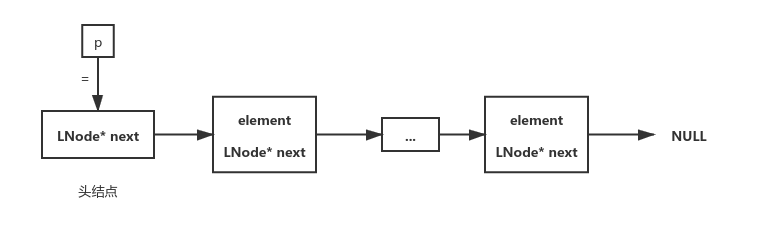
不带头结点，p指向可被修改
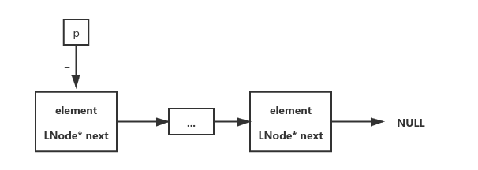
1 | typedef struct Node{ |
创建
头插法
带头结点：创建头结点后，可以在循环内完成后面所有带数据结点的创建、初始化和头插操作；
不带头结点：必须手动先创建一个带数据的结点，再进入循环（创建、初始化、后插、数据交换）；
头插法在创建头结点后必须把头结点先指向NULL，否则第一次插入时会把新结点指向未知区域；
1 | // 带头结点 |
尾插法
使用一个指针指向尾结点，向尾结点后面插入一个新结点，再将指针指向新的尾结点；
带与不带头结点使用尾插法的共同点：都需要一个临时指针指向每一次迭代的末结点，且循环体遵循“创建、初始化、尾插”的顺序，最后都需要把末结点指向NULL；
不同点：带头结点时循环体完整地实现了每一个结点的创建、初始化和尾插过程，而不带头结点的循环体无法对第一个结点做初始化工作，因为循环体内一定是先创建再初始化再尾插，如果把第一个结点的创建过程都扔进去，那还是会因为第一个结点没有地方执行“尾插”操作而与循环体矛盾。因此不带头结点的需要在外面初始化第一个结点；
1 | // 带头结点 |
查找
按位查找
1 | // 带头结点 |
按值查找
1 | // 带头结点 |
插入和删除
指定位序插入
1 | // 带头结点 |
指定结点插入
指定结点的前插和后插操作在创建部分已经体现了
指定位序删除
1 | // 带头结点 |
指定结点删除
1 | // p结点可以是任意结点 |
双链表
带头结点
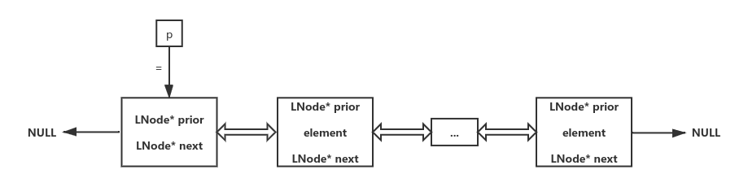
不带头结点
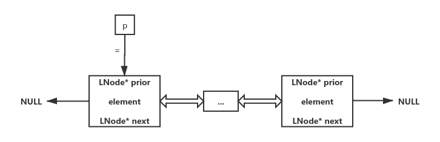
1 | typedef struct DNode{ |
创建
1 | // 带头结点 空链表 |
插入
由于双链表可直接查询前驱结点，因此所有前插操作都可以转换为后插操作
1 | // 后插（带不带头结点都需要注意尾结点之后的NULL没有prior指针） |
删除
指定位序删除
1 | bool IndexDelete(DLinkList dList, int index){ |
指定结点删除
1 | // 删除结点p |
循环链表
将单/双链表尾结点的next指针（原本指向NULL）指向头结点（空表时即指向自己），将双链表头结点prior指针指向自己；
循环单链表可以从任意结点出发，找到其他任意一个结点；
循环双链表在执行插入删除操作时，不需要考虑头尾是否为NULL（即是否有prior/next指针）的情况；
在需要频繁操作表头/表尾元素时，可以将链表头指针初始化指向表尾元素；
静态链表
静态链表是用结构体数组的方式模拟的链表，数组将申请一块总量固定的连续内存空间，每一个元素表示一个结点，结点中存放一个int值表示下一个结点在数组中的下标位置。
数组第一个元素充当“头结点”的角色
尾结点的next值应设置为-1，初始化空静态链表时应该将所有结点的next值设置为同一个特殊值表示该结点为空，例如-2；
1 | typedef struct { |
静态链表执行插入操作时，需要从头开始找到一个标记为空的结点；但只能在已有的空间内操作，无法额外申请空间。
删除操作需要从头出发找到前驱结点，修改前驱结点游标并将被删除结点标记为空结点。
顺序表与链表的优缺点
顺序表的插入/删除操作时间复杂度为\(O(n)\)，时间开销主要源于移动元素；链表同样为\(O(n)\)，但开销主要来源于查找元素；在元素较复杂时，搬运的开销要高得多；
顺序表按位查找\(O(1)\)，按值查找\(O(n)\)或\(O(\log_2n)\)（元素有序时），链表按位查找和按值查找都是\(O(n)\)；
| 优点 | 缺点 | |
|---|---|---|
| 顺序表 | 支持随机存取、存取密度高，空间自动回收 | 大片连续空间分配不方便、改变容量不方便 |
| 链表 | 离散的小空间分配方便，改变容量方便 | 无法随机存取、存储密度低、需要手动回收空间 |
Chapter3 栈和队列
栈的概念
栈（Stack）是只允许在一端（栈顶）进行插入或删除操作的线性表，具有先进后出（FILO）或后进先出（LIFO）的特点。
n个不同的元素进栈，出栈元素不同排列的个数为\(\cfrac{1}{n+1}C_{2n}^n\)，称为卡特兰（Catalan）数，可采用数学归纳法证明。
顺序栈
类似于顺序表的定义方式，定义一个结构体，包含一个静态数组与一个栈顶索引值（代替栈顶指针），在栈为空时将栈顶索引值设为-1（意味着索引从0开始）；
注意，top初值设为-1意味着top+1是可存放数据的位置，如果设为0则本身就是可存放数据的位置，之后判定是否栈空栈满以及栈顶的序号都会不同；
1 |
|
顺序共享栈
在同一块连续的内存空间中创建两个反向的顺序栈，栈顶指针（索引）分别指向空间的头部和尾部（或者头部和尾部的第一个溢出位）
1 |
|
两个栈的总空间不变，但各自的空间却可以随着对方的增删动态变化，利用栈顶指针（索引）是否相邻判断是否栈满
1 | top1 == -1 && top2 == MAX // 栈空 |
链栈
链栈：基于链式存储实现的栈
本质上是单链表，只是将头结点（或首结点）视为栈顶，增删操作都只能在头结点（首结点）位置进行。
带头结点
1 | typedef struct Node{ |
不带头结点
无法创建空表，只能在创建时接受一个值作为首个结点的数据。
1 |
|
队列的概念
队列是只允许在一端（队尾）进行插入（入队），在另一端（队头）删除（出队）的线性表，特点为FIFO
队列具有的操作：初始化、销毁、入队、出队、读队头元素、判空
顺序队列
1 |
|
Attention
如果rear初值意义为队尾元素的后一个位置（0），那么每次push()操作的顺序是先设值，再执行rear = (rear + 1) % MAX；
如果rear初值意义为队尾元素（MAX-1或-1），那么push()操作的顺序就是上述调换；
保持上述结构体不变时，上述两种方式区别在于：
- 判空方式：前者使用
rear == front，后者使用(rear + 1) % MAX == front - 判满方式：前者使用
(rear + 1) % MAX == front，后者使用(rear + 2) % MAX == front
相同点在于：都要牺牲front前面的一个存储单元
- 前者：当
rear在front的前一个位置时，如果再使用push()，将使rear == front，与判空条件矛盾； - 后者：当
rear在front的前两个位置时，如果再使用push()，将使(rear + 1) % MAX == front，与判空条件矛盾；
计算队列长度的方式：(rear - front + MAX) % MAX
不牺牲存储单元也可以判空判满的方式：在结构体中添加int size或bool tag作为辅助条件
size表示当前队列已使用的单元数，可直接通过size == 0或size == MAX判断空满；tag表示上一次操作是插入还是删除，这样可在判空条件矛盾时通过上一次操作的性质判断空满；
链队列
队列结点内存储队头指针（表头指针）以及队尾指针（表尾指针）
入队：尾结点后插
出队：删除头结点的下一个结点（或首结点）
链队列由于需要头尾指针作为结构体成员，但将头尾指针作为每一个结点的成员比较浪费空间，因此将队列结构体与结点结构体拆开
链队列不存在两种初始化rear的方式，原因在于每个数据的空间都是通过malloc动态分配的，一定是先分配内存，再修改指针，无法按照“先修改rear指向，后设值”的顺序执行push()操作，因此链队列可理解为顺序队列中的第一种初始化方式，即rear指向队尾元素的后一个位置（初值为NULL）；
链队列由于空间动态分配，一般情况下不存在“满”的情况，无需考虑。
1 | typedef struct LinkNode{ |
带头结点
初始化：创建头结点并将rear和front都指向头结点，且将二者内部的next均指向NULL；
判空：rear == front，即二者都等于头指针；
增：创建结点，设值，头结点后插，修改rear；
删：判空，取头结点后继结点，取值，修改front，最后一个出队时将链表置空，free；
判断最后一个出队的方式：lq->rear == lq->front->next
1 | LinkQueue initiate(){ |
不带头结点
初始化：将rear和front都指向NULL；
判空：front == NULL；
增：创建结点，设值，后插，修改rear，如果是第一个结点则将front和rear都指向它；
删：判空，取首结点，取值，修改front，最后一个出队时将链表置空，free；
判断最后一个出队的方式：lq->rear == lq->front
1 | LinkQueue initiate(){ |
双端队列
只允许从两端插入或删除的线性表
特殊情况：输入受限和输出受限
考察在指定输入序列时，输出序列的合法性
栈的应用
括号匹配
最后出现的左括号最先被匹配（LIFO），每出现一右括号就消耗一个左括号
对应栈操作：出现左括号时压入栈中，出现右括号时弹出栈顶并检查括号类型是否匹配
停止扫描，并给出括号不匹配结论的情况：
- 括号类型不匹配
- 扫描到右括号时栈已空，说明多出了一个右括号
- 扫描完所有括号时栈不为空，说明多出了一个左括号
代码实现：顺序栈，数据类型为char
1 | bool bracketCheck(char str[], int length){ |
表达式求值
中缀表达式：运算符在两个操作数中间，例如a+b-c;
后缀表达式（逆波兰表达式）：运算符在两个操作数后面，例如ab+c-;
前缀表达式（波兰表达式）：运算符在两个操作数前面，例如- +ab c;
中缀表达式向后缀/前缀表达式转换步骤：
- 按照左优先原则（后缀）或右优先原则（前缀）确定中缀表达式中运算符的顺序
- 按照运算符顺序依次转换表达式
栈的应用：
- 中缀表达式转后缀/前缀表达式
- 计算后缀/前缀表达式
后缀表达式
中缀表达式按照左优先原则转换为后缀表达式之后，运算符在计算机中的实际执行顺序就是其在后缀表达式中从左到右出现的顺序;
计算方式：从左往右扫描，每遇到一个运算符，就让运算符前面最近的两个操作数执行对应运算，并合并为一个操作数；
栈实现方式：从左往右扫描，遇到操作数压入栈，遇到运算符，弹出两个栈顶元素，执行相应运算，并将运算结果压回栈顶，继续扫描，如果表达式合法，则最后栈中只会留下一个元素，就是最终的结果；
注意：先出栈的是右操作数；
前缀表达式
中缀表达式按照右优先原则转成前缀表达式后，运算符在计算机中的实际执行顺序就是其在前缀表达式中从右到左出现的顺序；
计算方式：从右往左扫描，每遇到一个运算符，就让运算符前面最近的两个操作数执行对应运算，并合并为一个操作数；
栈实现方式：从右往左扫描，遇到操作数压入栈，遇到运算符，弹出两个栈顶元素，执行相应运算，并将运算结果压回栈顶，继续扫描，如果表达式合法，则最后栈中只会留下一个元素，就是最终的结果；
注意：先出栈的是左操作数；
中缀表达式转后缀表达式的实现
中缀表达式转后缀表达式后，操作数出现的顺序是不变的，变化的只有运算符的顺序，因此需要初始化一个栈，用于存储暂时还不能确定运算顺序的运算符。
从左到右处理各个元素，直到末尾，每个元素有三种情况：
- 操作数，直接加入后缀表达式；
- 界限符，遇到
(直接入栈，遇到)则依次弹出栈内运算符并加入后缀表达式，直到弹出(为止。注意：(不加入后缀表达式； - 运算符，弹出栈中优先级高于或等于当前运算符的所有运算符，并加入后缀表达式，若无满足条件的运算符，或栈顶符号为
(或栈空，则停止弹出，把当前扫描的运算符入栈；扫描完所有字符后，将栈中剩余运算符依次弹出，并加入后缀表达式；
代码实现：顺序栈，数据类型为char
代码缺点：只能处理操作数为0~9的数字字符，以及四则运算操作符
1 | void convert(char *str, char *res, int strLength, int* resLength){ |
计算后缀表达式的实现
计算过程的实现实际上是在上述“中缀转后缀”的基础上，加上下面的逻辑实现的：
- 每弹出一个运算符，要一并弹出两个操作数进行相应运算；
具体代码实现的不同之处在于：
- “转换”的过程只创建了一个运算符栈，用于存放未知优先顺序的运算符；
- "计算"的过程需要创建两个栈，除了运算符栈之外，还需要一个操作数栈，以便可以在弹出运算符时一并弹出对应的两个操作数进行运算；
- 在执行完一次运算后，需要将运算结果压回操作数栈，作为一个新的左操作数；
两种情况：
- 扫描到操作数，直接压入操作数栈；
- 扫描到运算符，按转换的规则进行运算符的压入栈和弹出栈操作，执行弹出运算符时一并弹出对应的两个操作数进行运算，并将运算结果压回操作数栈；
代码实现：顺序栈，数据类型为int，需要将操作数字符通过减去字符0转为int类型，运算符通过ASCII码转为int类型，统一操作数与运算符的类型，以免定义两种类型的栈。
代码缺点：只能处理操作数为0~9的数字字符，以及四则运算操作符
1 | int cvtAndCalc(char *str, int strLength){ |
递归
递归函数调用的特点：最后被调用的（即最深层的）函数最先执行（LIFO）；
函数调用时，需要用一个栈（称为递归工作栈）存储：
- 每层递归执行结束后下一个语句的地址；
- 传递给函数的实参以及在函数内部定义的局部变量等信息；
栈工作过程：
- 每进入一层递归，就将该层递归所需信息压入栈顶（包括上面的两点）；
- 每退出一层递归，就从栈定弹出相应层的信息；
递归算法的缺点：递归层数过多会导致栈溢出，且空间复杂度会越来越高,另外多重递归容易包含很多重复的计算;
队列的应用
树的层次遍历：将根结点入队,每次都将队头结点的左右孩子入队,并将队头结点出队，依次类推；
图的广度优先搜索：将出发点入队，每次都将队头结点的未遍历邻接结点入队，并将队头结点出队,以此类推；
操作系统处理多进程并发的资源分配问题：FCFS(First Come First Service，先到先得)，将所有进程依次入队(就绪进程队列)，CPU每次执行队头进程一小段时间，然后将队头进程出队并重新在队尾入队，依次往复；
打印数据缓冲区：多台电脑使用同一台打印机时，使用队列按照先来后到的顺序存储提交的打印数据，只打印队头数据即可。缓解了主机与打印机处理速度不匹配的问题；
矩阵的压缩存储
矩阵中，\(i-j\) 的意义是元素 \(a_{i,j}\) 在列方向上与主对角线元素的距离，同理 \(j-i\) 表示行方向上与主对角线元素的距离；
一维数组
各个元素大小相同，且物理上连续存放，只需要知道数组起始地址，就可以知道任意数组下标对应元素的物理地址，计算方式为&a[i] = LOC + i * sizeof(ElemType)，其中LOC代表起始地址，即数组第一个元素的地址，注意由于下标从0开始，i的范围限制在[0, size)，其中size表示数组元素总个数；
二维数组
计算机的存储空间是线性连续的，因此需要将非线性的二维数组转化成线性的存储结构
两种存储方式：
- 行优先：将矩阵一行一行地存入线性连续的内存空间中，第
i行行末元素与第i+1行行首元素物理地址相邻； - 列优先：将矩阵一列一列地存入线性连续的内存空间中，第
i列列尾元素与第i+1列列首元素物理地址相邻；
优点：支持随机访问，只要给出元素的行列索引，就可以基于第一行第一列的元素地址算出指定元素的地址，假定数组规格为
M × N，计算方式为：
- 行优先：
&b[i][j] = LOC + (i * N + j) * sizeof(ElemType) - 列优先：
&b[i][j] = LOC + (j * M + i) * sizeof(ElemType)
普通矩阵
使用二维数组的方式存储；
注意在数学上描述矩阵元素时，行、列号通常从1开始，而使用数组描述时通常下标从0开始；
对称矩阵
概念：若 \(n\) 阶方阵中任意一个元素 \(a_{i,j}\) 都有 \(a_{i,j} = a_{j,i}\)，则该矩阵称为对称矩阵；
特点：关于主对角线对称，上三角区 \(i<j\)，下三角区 \(i > j\)；
压缩存储策略：只存储主对角线与下三角区的数据；
行优先压缩存储方式：
按行优先原则将各元素存入一维数组中，总共需要存储 \(\sum_{i=1}^ni\) 个数据，最后一个数据 \(a_{n,n}\)；
将矩阵行列号映射到一维数组索引的方式：\(a_{i,j}\) 对应下标 \(k = \sum_{n=1}^{i-1}n+j-1\)，减去1是因为数组元素从0开始；
访问上半区元素时，只需求对称元素索引即可；
列优先压缩存储方式：
- 第一点和第三点除了列优先外，其他不变；
- \(a_{i,j}\) 对应下标 \(k = \sum_{n = M}^{M-(j-1)+1}n+(i-j)+1-1\)，求和求的是前 \(j-1\) 列的元素个数，\((i-j)\) 求的是从第 \(i\) 行的主对角线元素开始（不包括）到第 \(j\) 列元素的步数，加1是为了补上主对角线元素，减1是因为数组元素从0开始；
三角矩阵
下三角矩阵
除了主对角线和下三角区，其余元素都相同的矩阵；
压缩存储策略：按行优先原则将橙色区元素存入一维数组中，并在最后一个位置存储上三角区常量；
矩阵行列号对应数组索引（从0开始）：下三角区 \(k = \sum_{n=1}^{i-1}n+j-1\) 上三角区 \(\sum_{n=1}^{i-1}n\)（即数组末尾存储的常量）；
上三角矩阵
行优先：上三角区 \(k = \sum_{n=N}^{N-(i-1)+1}n+(j-i)+1-1\) 上三角区 \(\sum_{n=1}^{i-1}n\)（即数组末尾存储的常量）；
三对角矩阵
概念：当 \(|i-j| > 1\) 时，满足 \(a_{i,j}=0\) 的矩阵；又称带状矩阵；
特点：只有主对角线以及与主对角线相邻的两侧对角线上的元素可以非0；
压缩存储策略：
- 只存储带状部分，按照行优先原则，除了第一行和最后一行只有两个元素之外，其余每行都是三个元素；
- 总共需要存储 \(3n-2\) 个数据；
- 前 \(i-1\) 行共 \(3(i-1)-1\) 个元素，而整体矩阵中的 \(a_{i,j}\) 在只看带状部分时是第 \(i\) 行第 \(j-i+2\) 个元素，相加可得索引 \(k=2i+j-2-1\) 减一由于索引从0开始；
- 如果知道索引 \(k\) 要反推行列号，可知 \(k+1\) （加一抵消索引0）一定大于前 \(i-1\) 行元素的总个数，且不大于前 \(i\) 行元素总个数，通过 \(3(i-1)-1<k+1\le 3i-1\) 可解出一个 \(i\) 关于 \(k\) 的不等式，向上取整即可得到 \(i\) 的值，最后通过索引转换公式求出 \(j\) 的值；
稀疏矩阵
概念：非零元素远远少于矩阵元素总个数的矩阵；
压缩存储策略
- 普通策略：使用结构体模拟三元组，按照“行-列-值”的形式存储非零元素，最后存储在顺序里即可；
- 缺点：无法随机访问或随机存取
- 十字链表法：对于 \(M×N\)
的矩阵，定义向下域指针和向右域指针
- 向下域指针代表列，第 \(j\) 个向下域指针指向第 \(j\) 列第一个元素；
- 向右域指针代表行，第 \(i\) 个向右域指针指向第 \(i\) 行第一个元素；
- 每个元素是一个结构体，存储内容包含“行-列-值”三个数据项与两个指针项，其中一个指针指向同列的下一个元素，另一个指针指向同行的下一个元素；
Chapter4 串
串的概念
基本概念
串：即字符串，是由零个或多个字符组成的有限序列，一般记为 \(S=`a_1a_2a_3\dots a_n'\)（\(n\ge 0\)），其中 \(S\) 是串名，单引号（双引号）括起来的字符序列是串的值；\(a_i\) 可以是字母、数字或其他字符；串中字符的个数 \(n\) 称为串的长度。\(n=0\) 时的串称为空串（用 \(\phi\) 表示）；
子串：串中任意个连续的字符组成的子序列；
主串：包含子串的串；
字符在主串中的位置：字符在串中的序号（从1开始数）；
子串在主串中的位置：子串的第一个字符在主串中的位置；
任何数据存到计算机中一定是二进制数，需要有一些编码以及相应的编码规则，使一个字符对应一组二进制数；
常见的字符集与对应编码规则有：
- 英文字符集：ASCII
- 中英文字符集：Unicode，对应编码规则：UTF-8，UTF-16等
同一个字符集可以有多种编码规则，例如，使用 \(x\) 的定义域表示一个字符集，\(f\) 表示编码规则，\(y\) 表示一部分二进制数，映射 \(y=f(x)\) 就可以表示字符编码的过程与结果，编码规则不同，值域 \(y\) （即对应的一部分二进制数）也不一样；
串与线性表的关系
串是一种特殊的线性表，数据元素之间呈线性关系；
串的数据对象限定为字符集，如中文字符、英文字符、数字字符、标点字符等；
串的基本操作通常以子串为操作对象；
串的基本操作：赋值、复制、判空、求串长、清空、销毁、串联接、求子串、定位操作、比较操作；
串的存储结构
顺序存储
有些顺序存储的方式会将第一个元素设置为length，这样串在数组中的起始位置就从1开始，但该方式缺点在于将length的范围限制在了255以内；
还有一种方案是在数组末尾存储一个字符\0表示null，用户回收char*，但这种方式不利于统计串长；
1 |
|
链式存储
可通过将每一个节点内存储的数据由一个字符改为多个字符，增加存储密度；
使用第二种方式时，若最后一个结点填充不满，可以手动填充几个特殊字符
1 | typedef struct StringNode{； |
基本操作
以下代码中顺序串首个元素均置空，以达到从“1”开始计算字符序号的一致性
深拷贝
1 | // 动态顺序串 |
判空、求串长、清空与销毁
1 | // 判空 |
求子串：返回从主串第pos个字符起长度为len的子串
1 | bool subString(StaticString* src, StaticString* dst, int pos, int len){ |
比较大小：返回值大于0说明前者大，小于0说明后者大，等于0说明相等
1 | int compare(StaticString* first, StaticString* second){ |
子串定位
1 | int locate(StaticString* mainStr, StaticString* subStr){ |
串的朴素模式匹配算法
长度为n的主串有(n-m+1)个长度为m的子串，可以理解为长度为m的串的第一个元素可在主串中平移几格（初始为1）
串的模式匹配：在主串中找到与模式串相同的子串，并返回其定位；
通过直接操作串的数组数据实现子串定位，而不使用上面的函数；
多数情况下，模式串的长度要远远小于主串的长度；
若模式串长度为m，主串长度为n，则
匹配成功的最好时间复杂度：\(O(m)\)，对应的情况是第一个子串就与模式串匹配，只需要执行m次判断相等的操作；
匹配失败的最好时间复杂度：\(O(n-m+1) = O(n-m) \approx O(n)\)，对应的情况是每个子串的第一个字符就与模式串匹配；
匹配成功或失败的最坏时间复杂度：\(O((n-m+1)*m) \approx O(nm)\)，对应的情况是每个子串都直到最后一个字符才不匹配；
1 | int match(StaticString* mainStr, StaticString* subStr){ |
KMP算法
串指针的回溯相当于把串整体右移若干个单位；
串的前缀：包含第一个字符且不包含最后一个字符的子串；（后缀相反）
KMP算法是朴素模式匹配算法的优化，由 \(\mathrm {D.E.Knuth}\)，\(\mathrm {J.H.Morris}\) 和 \(\mathrm {V.R.Pratt}\) 提出，也是算法名称的由来；
朴素模式匹配算法的缺点：当某些子串与模式串能部分匹配时，主串的扫描指针经常回溯，导致时间开销增加；
KMP对朴素的改进思路：主串指针不回溯，只回溯模式串指针，关键点在于模式串指针应该回溯到什么位置；
kmp算法的平均时间复杂度为：\(O(n+m)\)，其中 \(O(n)\) 来自于kmp本身（主串长度），\(O(m)\)
来自于求next数组的函数（模式串长度）；
模式串指针回溯位置数组的计算方式：
- 当模式串第 \(j\)
个字符匹配失败时，将模式串前 \(1～j-1\)
个字符组成的串记为 \(S\)，则
next[j]等于 \(S\) 的最长相等前后缀长度+1； - 特殊：
next[1] = 0;
1 | // 求模式串的回溯位数组next |
KMP算法的进一步优化
上述kmp的缺点：next[j]指向的字符与j处字符是一致的，再进行结果已知的重复对比造成了浪费；
优化方案：针对next数组，使j从2开始递增，当modeStr[j] == modeStr[next[j]]时，设置next[j] = next[next[j]]，省略重复的对比；
在getNext函数末尾加上
1 | for(int k = 2; k < modeStr.length + 1; k++) |
Chapter5 树
树的基本概念
树是一种逻辑结构；
树是 \(n(n>0)\) 个结点的有限集合，当 \(n=0\) 时，称为空树；
任意非空树都应该满足：
- 有且仅有一个特定的称为根的结点；
- 当 \(n>1\) 时，其余结点可分为 \(m(m>0)\) 个互不相交的有限集合，其中每一个集合本身又是一棵树，称为根结点的子树；
\(n\) 个结点的树中只有 \(n-1\) 条边，因为除了根结点外，每个结点都有且仅有一个前驱结点；
基本术语
祖先结点与子孙结点：从根节点出发到达某一结点形成路径，路径的终点为其他所有结点的子孙结点，其他所有结点都是路径终点的祖先结点；
双亲结点与孩子结点：离某结点最近的祖先结点（即前驱结点）称为该结点的双亲结点，反之是孩子结点；
兄弟结点：有同一个双亲结点的结点；
度：树中一个结点的子结点的个数；
树的度：树中的最大度数；
分支结点：度大于0的结点（即有孩子结点）；
叶子结点：度等于0的结点（无孩子结点）；
结点的层次：字面意思，第一层也可能称为第0层；
结点的高度：从最底层开始往上累加至该结点的层数和；
结点的深度：从最顶层开始往下累加至该结点的层数和；
树的高度/深度：树中结点的最大层数；
有序树：从左到右每一个子树都是有次序的，调换顺序后树改变；
无序数：子树没有先后次序，调换顺序后树不变；
路径：从一结点到另一个结点所经过的所有结点组成的序列；
- 由于树的分支是有向的（双亲结点->孩子结点），因此路径只能是自上而下；
- 路径长度：路径上所经过的边的个数；
森林：\(m(m\ge0)\) 棵互不相交的树的集合；
树的性质
树中的结点个数等于所有结点的度数加1（加上根结点）；
度为 \(m\) 的树中第 \(i\) 层上至多有 \(m^{i-1}\) 个结点（\(i\ge1\)）；
高度为 \(h\) 的 \(m\) 叉树至多有 \(\cfrac{m^h-1}{m-1}\) 个结点（上一个结论等比数列求和）；
具有 \(n\) 个结点的 \(m\) 叉树的最小高度为 \(h_{min} = \lceil \log_m(n(m-1)+1) \rceil\)；
- 该结论的情况是“除了最后一层外，每一层的结点数都要达到最大值”；
- 上一条结论的情况是“每一层的结点数都要达到最大值”；
- 通过令 \(\cfrac{m^h-1}{m-1} = n\) 解出的 \(h_{min}\) 很可能是小数，需要向上取整以全部包含，但最后一层结点个数就不是最大值了；
二叉树的概念
二叉树是 \(n(n>0)\) 个结点的有限集合
- 当 \(n=0\) 时，二叉树为空；
- 当 \(n>0\) 时，由根节点和两个互不相交的被称为根的左子树和右子树组成，它们也分别是一棵二叉树；
二叉树的五种基本形态：空树、根节点、根节点+左子数、根节点+右子树、根节点+左右子树；
二叉树结点编号方式：从上到下，从左到右；
二叉树的五条性质:
非空二叉树的叶子结点数等于度为2的结点数+1，即 \(n_0 = n_2+1\)；
- 推导方式：总结点数的计算方式 \(n=n_0+n_1+n_2\) 或 \(n = n_1+2n_2+1\)，联立可得上式；
非空二叉树上第 \(k\) 层上至多有 $2^{k-1} $ 个结点（\(k\ge1\)）
高度为 \(h\) 的二叉树至多有 \(2^h-1\) 个结点（\(h\ge1\)）
结点 \(i\) 所在的层次为 \(\lfloor\log_2i\rfloor+1\)；
完全二叉树的性质；
二叉树 VS 度为2的有序树
- 二叉树可以为空，而度为2的有序数至少有三个结点；
- 二叉树的孩子结点始终有左右之分，度为2的有序树的孩子结点次序是相对的，意味着当结点只有一个孩子结点时，前者也区分是左孩子还是右孩子，而后者不区分；
满二叉树（完美二叉树）
一棵高度为 \(h\)，且含有 \(2^h-1\) 个结点的二叉树称为满二叉树；
- “满”表示左孩子一定在右孩子之前生成；
对于编号为 \(i\) 的结点，若存在，其双亲结点的编号为 \(\lfloor i/2 \rfloor\)，左孩子为 \(2i\)，右孩子为 \(2i+1\)；
完全二叉树
以满二叉树的顺序生成的二叉树称为完全二叉树（只有最后一层可以不满）；
- 若 \(i \le \lfloor n/2 \rfloor\)，则结点 \(i\) 为分支结点（取等号的结点为该树的最后一个分支结点），否则为叶子结点；
- 当 \(i > 1\) 时，结点 \(i\) 的双亲结点标号为 \(\lfloor i/2\rfloor\)
- \(i\) 为偶数时，双亲结点编号为 \(i/2\)，是左孩子；
- \(i\) 为奇数时，双亲结点编号为 \((i-1)/2\)，是右孩子；
- 当 \(2i\le n\) 时，结点 \(i\) 的左孩子编号为 \(2i\)，否则无左孩子（即为叶子结点）；
- 当 \(2i+1\le n\) 时，结点 \(i\) 的右孩子编号为 \(2i+1\)，否则无右孩子；
- 具有 \(n(n>0)\) 个结点的完全二叉树的高度为 \(\lfloor\log_2i\rfloor+1\) 或 \(\lceil \log_2(n+1)\rceil\)；
- 叶子结点只可能在最深的两层中出现，最深层全是叶子结点，且从左到右顺序排列；
- 度为1的结点如果存在，则只可能是编号是最大的分支结点，并且孩子结点一定是左结点；
二叉排序树
若二叉树非空，且满足以下条件，称为二叉排序树：
- 对任意结点，若存在左子树或右子树，则其左子树上所有结点的关键字均小于该结点，右子树上所有结点的关键字均大于该结点；
平衡二叉树
树上任意结点的左子树和右子树的深度差都不超过1的二叉树；
二叉树的存储结构
顺序存储：用一个数组依次从上到下、从左到右存储完全二叉树上的结点元素；
- 存储完全二叉树时，只需将之前的 \(i\) 替换成下标，即可计算双亲结点与孩子结点的索引值；
- 存储非完全二叉树时，需要补全成完全二叉树，并将补充的空结点元素置0，在最坏情况下（从上往下只有右孩子），会浪费很多空间；
- 数组索引从1开始存储，索引0的位置存储结点的个数；
链式存储：用一个数据域data和两个指针域lchild与rchild构建结点创建二叉树即可，缺少孩子结点时将指针域置空；
- 含有 \(n\) 个结点的二叉链表中，有
\(n+1\) 个空链域；
- 推导方式：空链域个数 = 总指针域的个数(\(2n\)) - 非空链域个数(\((n-1)\))，除了根结点外，每个结点都有一个双亲结点，即一个非空链域；
1 | typedef struct BiTreeNode{ |
二叉树的遍历
先序/中序/后序遍历
遍历逻辑：按某条搜索路径访问树中的每个结点，树的每个结点均被访问一次，而且只被访问一次；
按照根的访问次序，分为三种遍历方式
- 先序遍历：根->左子树->右子树
- 中序遍历：左子树->根->右子树
- 后序遍历：左子树->右子树->根
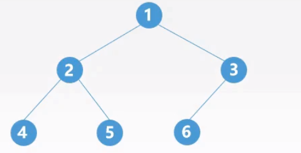
递归实现
时间复杂度均为 \(O(n)\)
1 | // 先序遍历：124536 |
非递归实现
借助栈的思想（LIFO）与功能实现中序遍历：
- 初始依次扫描根结点的所有左侧结点并将它们一一进栈；
- 出栈一个结点，访问它；
- 扫描该结点右孩子结点并将其进栈；
- 依次扫描右孩子结点的所有左侧结点并一一进栈，之后回到第二步；
- 反复该过程直到栈空为止；
1 | void InOrder(BiTree T){ |
层次遍历
借助队列实现层次遍历：
- 初始将根结点入队并访问根结点；
- 若有左子树，则将左子树的根入队；
- 若有右子树，则将右子数的根入队；
- 出队，访问该结点，并按二三步扫描该结点；
- 反复该过程直到队列空为止；
1 | void levelOrder(BiTree T){ |
从遍历序列构造二叉树
已知后序或先序遍历序列+中序遍历序列，可确定唯一二叉树；如果只知道后序或先序遍历序列，无法确定唯一二叉树；
例子：已知中序+先序遍历序列，构造二叉树
- 在先序遍历序列中，第一个结点是根结点；
- 在中序遍历序列中找到根结点，两侧分别为左子树的和右子树的中序遍历序列；
- 将中序序列的两部分在先序序列中划分开来，得到左右子树的先序遍历序列，并以各自的第一个结点作为根结点，再回到第二步重复；
以此类推，将先序换成后序，除了根节点位置变成最后一个之外，其他一样；
线索二叉树
本节内容中的“前驱”和“后继”指的是在先序/中序/后序遍历序列中相邻结点位置的前后关系
按照先序/中序/后序遍历序列，依次将每个结点线索化，得到线索二叉树；
线索化（前驱和后继指的是在序列中的前后关系）：
- 若无左子树，将左指针指向其前驱结点；
- 若无右子树，将右指针指向其后继结点；
在结点结构中，添加左标志位ltag和右标志位rtag，标记lchild和rchild指向的是孩子结点（0）还是前驱/后继结点（1）；
1 | typedef struct ThreadNode{ |
由这样的结点结构组成的二叉链表作为二叉树的存储结构时，称为线索链表，其中指向前驱或后继结点的指针称为线索；
由三种遍历序列构造的线索二叉树分别称为先序线索二叉树、中序线索二叉树（最常用）和后序线索二叉树；
- 中序线索二叉树寻找前驱/后继结点最容易，后序则最繁琐；
中序线索二叉树寻找前驱/后继结点的方法
中序遍历序列中第一个结点是树最左侧的结点，最后一个结点是树最右侧的结点；
找前驱结点的方式：
- 若左指针为线索（
ltag=1），则其指向的结点为前驱结点； - 若左指针为左孩子，则其左子树的最右侧结点为前驱结点；
找后继结点的方式：
- 若右指针为线索（
rtag=1），则其指向的结点为后继结点； - 若右指针为右孩子，则其右子树最左侧结点为后继结点；
中序线索二叉树的线索化
- 按中序遍历的顺序递归，思路就是优先线索化左孩子；
- 若无左子树，将左指针指向前驱结点
*pre，并设置当前结点*p->ltag=1； - 当前驱结点非空且没有右孩子时，将前驱结点的右指针指向当前结点（即设置后继结点），并设置
*pre->rtag=1； - 修改前驱结点指针指向当前结点，接下去处理当前结点的右子树（此时处于递归层中）；
注意，中序遍历序列线索化后，会留下两个空指针，分别是序列中第一个结点的lchild以及最后一个结点的rchild，但是它们的tag都是1；
为了利用这两个空指针，还需另外创建一个头结点，将头结点的lchild指向树的根节点，第一个遍历的结点的lchild指向头结点，头结点的rchild指向最后一个遍历的结点，最后一个遍历的结点的rchild指向头结点；
1 | // p为根节点，pre为前驱结点（初始化为NULL） |
带头结点的中序线索二叉树的操作
1 | // 寻找第一个遍历的结点（也是寻找树最左侧的结点） |
树的存储结构
| 优点 | 缺点 | |
|---|---|---|
| 双亲表示法 | 寻找双亲结点效率高 | 寻找孩子结点效率低 |
| 孩子表示法 | 寻找孩子结点效率高 | 寻找双亲结点效率低 |
| 孩子兄弟表示法 | 寻找孩子结点效率高，方便实现树转换为二叉树 | 寻找双亲结点效率低 |
双亲表示法
采用一组连续的存储空间来存储每个结点，同时在每个结点中增设伪指针，指示双亲结点在数组中的位置；
根节点下标为0，其伪指针域为-1；
1 |
|
孩子表示法
将每个结点的孩子结点都用单链表连接起来形成一个线性结构，\(n\) 个结点具有 \(n\) 个孩子链表；
1 |
|
孩子兄弟表示法
左指针指向第一个孩子结点，右指针指向兄弟结点；
1 | typedef struct CSNode { |
森林和二叉树的相互转换
森林是 \(m(m>0)\) 棵互不相交的树的集合，当 \(m=1\) 时就是将一棵普通的树转化成二叉树；
森林转二叉树：将森林的各个根节点视为兄弟结点，使用孩子兄弟表示法，用nextsibling连接各根结点；
二叉树转森林（本质是用孩子兄弟表示法存储森林为二叉链表）：按照“左孩子右兄弟”的方式从根节点开始转换；
树和森林的遍历
树的先/后序遍历方式：与二叉树遍历过程类似，区别在于其子树不一定为2，需要判断是否还有子树；
一棵树的后序遍历序列与其转换为二叉树后的中序遍历序列相同；
1 | // 先序 |
树的层次遍历：也可称为树的广度优先遍历，用队列实现
- 若树非空，将根结点入队；
- 若队列非空，将队头元素出队并访问，同时将该结点的孩子结点依次入队；
- 重复第二步直到队列为空；
1 | void levelOrder(TreeNode* R){ |
森林的先序遍历：与森林转换为二叉树后的先序遍历序列相同
- 访问第一棵树的根结点；
- 先序遍历第一棵树中根节点的子树森林（一棵树除去根节点后剩余的部分组成的森林）；
- 递归直到子树森林只有一个结点时进入第三步，开始新一轮递归；
- 先序遍历除去第一棵树之后剩余的树构成的森林；
森林的中序遍历：效果等同于依次对各个树进行后序遍历，或转换为二叉树后的中序遍历序列
- 中序遍历森林中第一棵树的根结点的子树森林；
- 访问第一棵树的根节点
- 中序遍历除去第一棵树只有剩余的树构成的森林；
总结，横向效果等价
| 树 | 森林 | 二叉树 |
|---|---|---|
| 先序遍历 | 先序遍历 | 先序遍历 |
| 后序遍历 | 中序遍历 | 中序遍历 |
二叉排序树（二叉查找树）
概念
二叉排序树，又称二叉查找树（BST, Binary Search Tree）；
对任意结点都满足：左子树的结点值 < 根结点值 < 右子树结点值；
基于上述特点，进行中序遍历，可以得到一个递增的有序序列；
1 | typedef struct BSTNode{ |
按值查找
普通方式最坏空间复杂度 \(O(1)\)，递归方式最坏空间复杂度 \(O(h)\)，\(h\)为二叉排序树的深度；
查找效率分析：平均查找长度（ASL，Average Search Length）
平均查找长度计算方式：
- 查找成功：\(ASL\) = 所有结点查找成功的总平均对比次数
- 查找失败：\(ASL\) = 所有查找失败的最后落点的总平均对比次数（落点只会在叶子结点的下一层上）
查找的时间复杂度分析（查找成功和失败的复杂度分析是一样的）
- 最好情况：具有 \(n\) 个结点的二叉树最小高度为 \(\lfloor\log_2n\rfloor+1\)，\(ASL=\mathcal(\log_2n)\)；
- 最坏情况：斜二叉树，树高 \(h\) 等于结点总数 \(n\)，\(ASL=O(n)\)；
1 | // 普通方式：与根节点比较，较小就找左子树，较大就找右子树 |
插入
1 | // 普通方式 |
按照给定序列构造二叉排序树
1 | BSTree create(int seq[], int size){ |
按值删除
三种情况：
- 叶子结点可以直接删；
- 只有单个子树的结点需要替代父节点的位置；
- 既有左子树又有右子树，可令待删除结点在二叉排序树序列中的直接前驱结点（或直接后继结点）替代该结点，并删除这个前驱（后继）结点；
- 二叉排序树中，某个结点的直接前驱和直接后继指的是，在按结点值的大小进行递增排序的序列中，恰好在前或在后一个位置的结点；
- 直接前驱结点是左子树最右下角的结点（左子树最大值），直接后继结点是右子树最左下角的结点（右子树最小值）
- 二者只可能是叶子结点或只有单个子树的结点，可以按前面两种情况处理。
- 二叉排序树中，某个结点的直接前驱和直接后继指的是，在按结点值的大小进行递增排序的序列中，恰好在前或在后一个位置的结点；
平衡二叉树
平衡二叉树（Balanced Binary Tree），简称平衡树（AVL树），树上任一结点的左子树和右子树的高度差不超过1；
结点的平衡因子 = 左子数高 - 右子树高；
当插入一个新结点导致不平衡之后，只要将最小不平衡子树调整平衡，就可以使整体平衡；
调整目标：①恢复平衡 ②保持二叉排序树的特性
调整最小不平衡子树的四种情况：
- LL：在A结点的左孩子的左子树中插入新结点导致不平衡；
- 策略：让A的左孩子右旋到A的位置，并依据二叉排序树的大小关系，转移左孩子的右子树成为根结点的左子树；
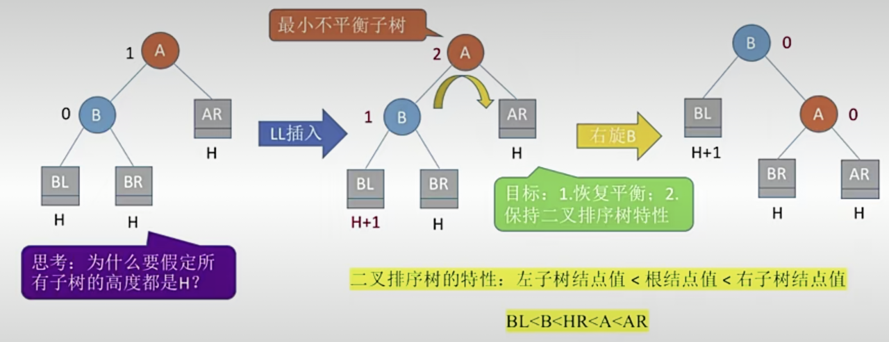
1 | // 假设原本指向A的结点名为N |
- RR：在A结点的右孩子的右子树中插入新结点导致不平衡；
- 策略：让A的右孩子左旋到A的位置，并依据二叉排序树的大小关系，转移右孩子的左子树成为根结点的右子树；
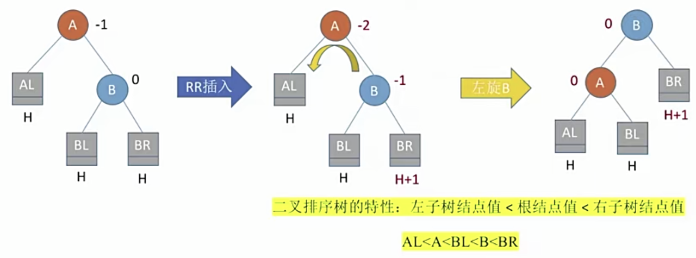
1 | B->rchild = A->lchild; // 转移 |
- LR：在A结点的左孩子的右子树中插入新结点导致不平衡；
- 策略：让A的左孩子的右孩子先左旋到B再右旋到A，期间转移两次，方式与上面相同；
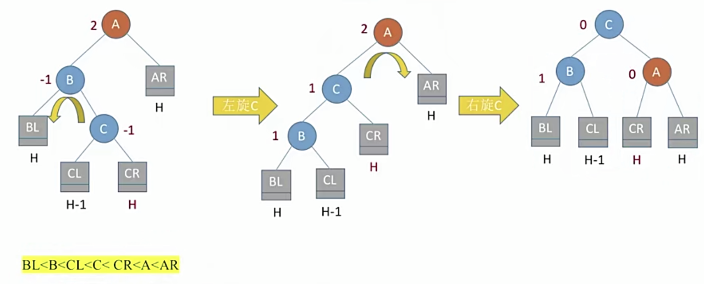
1 | // 左旋 |
- RL：在A节点的右孩子的左子树中插入新结点导致不平衡；
- 策略：让A的右孩子的左孩子先右旋到B再左旋到A，期间转移两次，方式与上面相同；
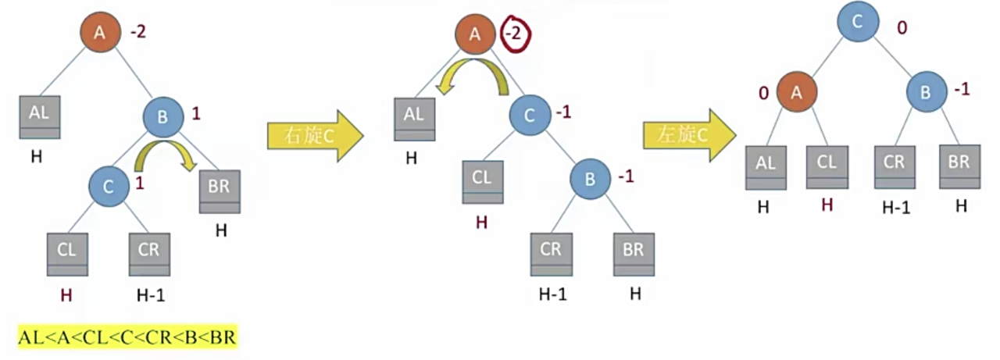`
1 | // 右旋 |
总结：插入操作导致“最小不平衡子树”高度+1，而调整过后高度恢复为原来的值，进而其祖先结点也都恢复平衡；
平衡二叉树的查找效率分析
- 若高度为 \(h\)，则最坏情况下，查找一个关键字最多需要对比 \(h\) 次，即查找操作的时间复杂度不可能超过 \(O(h)\)；
- 假设 \(n_h\) 表示深度为 \(h\) 的平衡二叉树中含有的最少结点个数，易知
\(n_0=0,n_1=1,n_2=2\)，且 \(n_h=n_{h-1}+n_{h-2}+1\)；
- \(n_3=4,n_4=7,n_5=12,n_6=20\dots\)
- 含有 \(n\) 个结点的平衡二叉树的最大深度为 \(O(\log_2n)\)，即平衡二叉树的平均查找长度为 \(O(\log_2n)\)
哈夫曼树
结点的权：表示的重要性，通常有某种现实含义；
结点的带权路径长度：从树的根到该结点的路径长度（经过的边数）与该结点权值的乘积；
树的带权路径长度：（\(WPL\)，Weighted Path Length）树中所有叶结点的带权路径长度之和，\(WPL=\sum_{i=1}^nw_il_i\)
在含有 \(n\) 个带权叶结点的二叉树中，其中带权路径长度（WPL）最小的二叉树称为哈夫曼树，也称最优二叉树；
哈夫曼树的构造：给定 \(n\) 个权值分别为 \(w_1,w_2,\dots,w_n\) 的结点，构造哈夫曼树的算法描述如下：
- 将这 \(n\) 个结点分别作为 \(n\) 棵仅含一个结点的二叉树，构成森林 \(F\)；
- 构造一个新结点，从 \(F\) 中选择两棵根结点权值最小的树作为新的结点的左、右子树，并且将新结点的权值置为两个子树的权值之和；
- 从 \(F\) 中删除刚才选出的两棵树，同时将刚刚新得的树加入 \(F\) 中；
- 重复二三步，直到 \(F\) 中只剩下一棵树为止；
构造的特点：
- 每个初始结点最终都成为叶结点，且权值越小的结点到根节点的路径长度越大；
- 哈夫曼树的结点总数为 \(2n-1\)；
- 哈夫曼树中不存在度为1的结点；
- 哈夫曼树不唯一，但 \(WPL\) 一定相同且最优；
哈夫曼编码
字符集中的每个字符作为一个叶子结点，各字符出现的频度作为结点的权值，根据上面的方法构造哈夫曼树；
固定长度编码：每个字符用相等长度的二进制位表示；
可变长度编码：允许对不同字符用不等长的二进制位表示；
如果没有一个编码是另一个编码的前缀，则称这样的编码为前缀编码；
由于从给定叶子结点构造的哈夫曼树不唯一，因此哈夫曼编码也不唯一；
哈夫曼编码可以用于数据压缩；
Chapter6 图
图的定义
G:Graph, V:Vertex, E:edge
定义：图 \(G\) 是由顶点集 \(V\) 和边集 \(E\) 组成，记为 \(G=(V,E)\)，其中 \(V(G)\) 表示图 \(G\) 中顶点的有限非空集，\(E(G)\) 表示图 \(G\) 中顶点之间的关系（边）的集合。
若 \(V=v_1,v_2,\dots,v_n\)，则用 \(|V|\) 表示图 \(G\) 中顶点的个数，也称图 \(G\) 的阶，\(E=(u,v),u\in V,v\in V\)，用 \(|E|\) 表示图 \(G\) 中边的条数；
特点：图的顶点集一定是非空集，但边集可以是空集，总的来说图不可为空；
无向图：\(E\) 是无向边（也称为边）的有限集合，边是顶点的无序对，记为 \((v,w)\) 或 \((w,v)\)，二者等价。\(v\) 和 \(w\) 称为邻接点，边 \((v,w)\) 依附于这两个顶点（或与俩顶点相关联）；
有向图：\(E\) 是有向边（也称为弧）的有限集合，边是顶点的有序对，记为 \(<v,w>\)，顶点 \(v\) 称为弧尾，\(w\) 称为弧头，总体称为从顶点 \(v\) 到顶点 \(w\) 的弧，也称 \(v\) 邻接到 \(w\) 或 \(w\) 邻接自 \(v\)，注意 \(<v,w>\ne<w,v>\)；
简单图：①不存在重复的边（若为有向图则重复边方向也一样） ②不存在顶点到它自己的边；
多重图：存在重复边或存在顶点到它自己的边；
无向图顶点的度：依附于该顶点的边的条数，记为 \(TD(v)\)；
- 对于无向图，每条边都为两个结点贡献一个度，因此所有顶点度的和等于边数的两倍 \(\sum_{i=1}^{n}ID(v_i)=2|E|\)；
有向图顶点的度：入度+出度，即 \(TD(v)=ID( v)+OD(v)\)
入度：以该顶点为终点的有向边的数目，记为 \(ID(v)\)；
出度：以该顶点为起点的有向边的数目，记为 \(OD(v)\)；
对于有向图，每条边都为弧尾贡献一个出度，为弧头贡献一个入度，因此所有顶点的入度和与出度和相等 \(\sum_{i=1}^{n}ID(v_i)=\sum_{i=1}^{n}OD(v_i)\)
路径：两个顶点之间的一条路径是由顶点组成的序列；
- 顶点之间可能不存在路径，例如顶点没有边或只作为弧尾；
- 简单路径：顶点不重复出现的路径；
- 路径长度：路径上边的条数；
- 连通/非连通：无向图中，若路径 \(v\rightarrow w\) 存在则称顶点 \(v\) 和 \(w\) 是连通的；
- 连通/非连通图：任意两个顶点都连通的无向图称为连通图，否则称为非连通图；
- 具有 \(n\) 个结点的连通图最少有 \(n-1\) 条边，非连通图最多有 \(C_{n-1}^2\) 条边；
- 强连通：有向图中，若两条路径 \(v \leftrightarrow w\) 都存在，则称顶点
\(v\) 和 \(w\) 是强连通的；
- 强连通图：任意一对顶点都强连通的有向图称为强连通图；
- 具有 \(n\) 个顶点的强连通图最少有 \(n\) 条边；
回路：首尾顶点相同的路径；
- 简单回路：除了首尾顶点外，其余顶点不重复出现的回路；
点到点的距离：从顶点 \(v\) 出发到顶点 \(v\) 的最短路径的长度；（当\(v\rightarrow w\)路径不存在时，记该距离为 \(\infin\)）
子图：从图的顶点集和边集中分别取子集构成的图；（不是任意选，必须能组成图）
若子图的顶点集包含了原图的所有顶点，则称为原图的生成子图；
极大连通子图：包含顶点和边尽可能多的连通部分，无向图中的极大连通子图称为连通分量；
极大强连通子图：包含顶点和边尽可能多的强连通部分；
连通图的生成树：包含图中所有顶点的一个极小连通子图（边尽可能的少）``````````````
- $n 个顶点的生成树有 $ \(n-1\) 条边；
- 同一个图的生成树不唯一；
树：不存在回路，且连通的无向图
- 砍掉任意一条边都会变成非连通图；
- \(n\) 个顶点的树，必定有且只有 \(n-1\) 条边。因此 \(n\) 个顶点的图，如果边数 \(|E|>n-1\)，就一定有回路；
有向树：其中一个顶点的入度为0（根节点），其余顶点的入度均为1的有向图；
- 有向树不是强连通图；
非连通图的生成森林：非连通图的连通分量的生成树构成生成森林
带权图/网：每条边带有权值的图称为带权图，也称网；
带权路径长度：带权图中一条路径上所有边的权值之和；
无向完全图：任意两个顶点之间都存在边的无向图；
- 若无向图顶点数 \(|V|=n\)，则 \(|E| \in [0,C_n^2]=[0,n(n-1)/2]\)
有向完全图：任意两个顶点之间都存在方向相反的两条弧
- 若有向图顶点数 \(|V|=n\)，则 \(|E|\in[0,2C_n^2]=[0,n(n-1)]\) （无向图的两倍）
稀疏图：边数很少的图，一般来说 \(|E<|V|\log|V|\)时可视为稀疏图，反之为稠密图；
图的存储方式
邻接矩阵法
无向图：行列值\((i,j)=(j,i)\)，整体关于主对角线对称；
有向图：行号表示弧尾，列号表示弧头，\((i,j)\ne(j,i)\)；
利用邻接矩阵求顶点的度：
- 无向图结点的度 = 所在行的非零元素个数；
- 有向图结点的：行非零元素（出度） + 列非零元素（入度）；
- 时间复杂度：\(O(|V|)\)；
带权图中，可以使用 \(0\) 或 \(\infin\) 表示不存在边/弧；
邻接矩阵的空间复杂度：
- 需要一个规模为 \(|V|\) 的数组存储顶点信息，另一个规模为 \(|V|\times |V|\) 的数组存储边的信息；
- 空间复杂度：\(O(ElemType1\cdot |V|)+O(ElemType2\cdot |V|^2)=O(|V|^2)\)；
- 基于第二点结论，空间复杂度仅取决于顶点的个数；
从节省空间的角度看，邻接矩阵更适合存储稠密图（边很多的图，不浪费矩阵元素）；另外可以利用对称矩阵的压缩存储方式进一步减少资源占用；
重要性质：设 \(A\) 是普通图的邻接矩阵，则矩阵 \(A^n\) 的元素 \((i,j)\) 表示从顶点 \(i\) 到顶点 \(j\)，长度为 \(n\) 的路径的数目；
对于一个确定的图，在顶点编号确定之后，邻接矩阵的表示方式就是唯一的；
1 | // 普通图的邻接矩阵 |
邻接表法
邻接表法使用顺序+链式的存储方式表示图；
无向图：每一条边都被关联两次，因此边结点的总数为 \(2|E|\)，整体空间复杂度 \(O(|V|+2|E|)\)；
- 顶点的度 = 该顶点结点的边结点链表的结点个数；
有向图：每一条弧只被链接一次，因此弧结点的总数为 \(|E|\)，整体空间复杂度 \(O(|V|+|E|)\)
- 顶点的出度：该顶点结点的弧结点链表的结点个数；
- 顶点的入度：遍历所有结点的弧链表，累计指向该顶点的边结点的个数；（时间复杂度很高）
对于一个确定的图，邻接表是不唯一的，因为边（弧）结点链表的顺序是可变的；
1 |
|
邻接表 VS 邻接矩阵
| 邻接表 | 邻接矩阵 | |
|---|---|---|
| 空间复杂度 | 无向图 O(|V|+2|E|)；有向图 O(|V|+|E|) | O(|V|^2) |
| 适用对象 | 稀疏图 | 稠密图 |
| 唯一性 | 不唯一 | 唯一 |
| 度的计算 | 无向图以及有向图的出度为边（弧）链表结点个数，有向图入度需要遍历所有结点的链表 | 遍历矩阵的行列，无向图对称点等价，有向图行表示出度，列表示入度 |
| 找邻边 | 除了有向图的入边需要挨个顶点遍历之外，顺着边（弧）链表往下找即可 | 无向图遍历行或列，有向图遍历行和列 |
十字链表和邻接多重表
只适用于存储无向图：邻接多重表
只适用于存储有向图：十字链表
对于一个确定的图（无向/有向），邻接多重表或十字链表的表示方式也是不唯一的（因为边结点或弧结点的顺序不唯一）
邻接多重表
解决存储无向图的两个问题：
邻接矩阵空间复杂度高 $O(|V|^2) $；
每条边在邻接表中都有重复的结点，造成浪费，且删除顶点、删除边等操作时间复杂度高；
邻接多重表空间复杂度：\(O(|V|+2|E|)\)；
1 |
|
十字链表
解决存储有向图的两个问题：
- 邻接矩阵空间复杂度高 $O(|V|^2) $；
- 邻接表求入度、找入边不方便；
十字链表空间复杂度：\(O(|V|^2)\)；
1 |
|
图的基本操作
基本操作：
判断是否存在边；
- 邻接矩阵 \(O(1)\)，邻接表 \(O(1)\sim O(|V| )\)
列出与某顶点相连的边；
- 无向图：邻接矩阵 \(O(|V|)\)，邻接表 $O(1)O(|V|) $
- 有向图：邻接矩阵 \(O(|V|)\)，邻接表：出边 \(O(1)\sim O(|V|)\) 入边 \(O(|E|)\)
插入顶点；
- 邻接矩阵：\(O(1)\)，由于初始化图结点时为顶点数组和邻接矩阵数组设置了上限，因此唯一开销是在数组里设置一个新顶点；
- 邻接表：\(O(1)\)，插入一个新结点；
删除顶点：
- 无向图：
- 邻接矩阵：$O(| V |) $，在顶点结点中多设置一个布尔值表示顶点是否有效，这样只需设置布尔值并将该顶点在矩阵中对应的行和列置0即可；
- 邻接表：\(O( 1 )\sim O(|E|)\)，最好情况是边链表为空，最坏情况是与其他所有顶点都有边，并且在其他顶点链表中都处于末位；
- 有向图：
- 邻接矩阵：\(O(|V|)\)；
- 邻接表：删出边 \(O(1) \sim O(|V|)\)，删入边 \(O(|E| )\);
- 无向图：
添加边：
- 邻接矩阵：\(O(1)\)；
- 邻接表：\(O(1)\)，链表头插法；
删除边：
- 无向图：邻接矩阵 \(O(1)\)；邻接表 \(O(|V |)\)
- 有向图：邻接矩阵 \(O(1 )\)；邻接表：删出边 \(O(1) \sim O(|V|)\)，删入边 \(O(|E| )\);
求某顶点的第一个邻接点号，当该顶点不存在或没有邻接点时返回-1；
- 无向图：邻接矩阵：\(O(1)\sim O(|V |)\)；邻接表 \(O(1)\)，边链表第一个结点；
- 有向图：邻接矩阵：\(O(1)\sim O(|V |)\)；邻接表：找出边邻接点 \(O(1)\)，找入边邻接点 \(O(1)\sim O(|E|)\)；
若顶点 \(y\) 是 \(x\) 的邻接点，求除了 \(y\) 之外的下一个 \(x\) 的邻接点顶点号，下一个不存在时返回-1；
- 邻接矩阵 \(O(1)\sim O(|V |)\)；邻接表\(O(1)\)，边（弧）链表下一个结点；
设置、获取指定边的权值；
- 等价于找指定的边（弧）
- 邻接矩阵 \(O(1)\)；邻接表 \(O(1)\sim O(|V|)\)；
图的遍历
广度优先搜索 BFS
与树的广度优先遍历之间的联系和区别：
- 联系：搜索与某个结点相邻的所有结点（孩子结点）；
- 区别：树不存在回路，因此搜索相邻结点时不可能搜到已访问过的结点，但图可能；
算法实现
- 找到与一个顶点相邻的所有顶点；
- 使用布尔数组标记已访问顶点；
- 需要一个辅助队列；
基于邻接矩阵与邻接表的差异：
- 邻接矩阵通过遍历行或列找到下一个邻接点，顺序固定，因此BFS对邻接点的搜索是递增的，且搜索序列唯一；
- 邻接表取决于存储时设定的顺序，因此搜索序列是不唯一的；
潜在问题与解决方案：
- 问题：非连通图无法遍历所有结点；
- 方案：完整执行一次BFS后，检查
visited是否还有未访问结点，是的话针对未访问结点再执行一次BFS；
1 | bool visited[MaxVertexNum]; |
复杂度分析
- 对于无向图，调用BFS的次数等于连通分量的个数；
- 对于非强连通有向图而言，从不同的顶点出发需要调用BFS的次数可能不同，从出度为0的结点出发固然需要调用更多次；
- 空间复杂度：队列长度取决于顶点的最大邻接点个数，因此最坏情况为 \(O(|V|)\)；
- 时间复杂度：开销来源于访问所有顶点和边；
- 邻接矩阵：访问 \(|V|\) 个顶点需要 \(O(|V|)\)，查找一个顶点的全部邻接点需要 \(O(|V|)\)，因此复杂度为 \(O(|V|)+O(|V|^2)=O(|V|^2)\)；
- 邻接表：无向图查找所有邻接点共需要 \(O(2|E|)\)，有向图需要 $O(|E|) $，因此复杂度为 \(O(|V|+|E|)\)；
广度优先生成树
根据广度优先的遍历顺序生成的树，同一个结点的所有邻接结点都是该结点的孩子结点，且互相是兄弟结点，遵循从左到右的顺序；
广度优先生成树是同一个图的生成树中高度最小的；
基于邻接表的存储结构会造成生成树不唯一；
广度优先生成森林
非连通图的连通分量通过BFS各自生成的树组成的森林称为广度优先生成森林；
深度优先搜索 DFS
图的DFS相当于树的先序遍历；
复杂度分析：
对于无向图，调用DFS的次数等于连通分量的个数；
对于非强连通有向图而言，从不同的顶点出发需要调用DFS的次数可能不同，从出度为0的结点出发固然需要调用更多次；
空间复杂度：来自递归的深度，最好情况是所有结点都只有唯一邻接点且连通 \(O(1)\)，最坏情况是类似线性的结构 \(O(|V|)\)；
时间复杂度：与广度优先相同；
深度优先生成树：从根节点出发，每条路径都是一个子树；
非连通图的连通分量通过DFS各自生成的树组成的森林称为深度优先生成森林；
基于邻接表的表示方式不唯一，因此DFS遍历序列也不唯一，生s成树也不唯一；
1 | bool visited[MaxVertexNum]; |
最小生成树
树的权：树中所有边的权值之和；
一个带权连通无向图，可以有不同的生成树，每棵树的权也可能不同。
概念：设 \(R\) 为图 \(G\) 的所有生成树的集合，则 \(R\) 中权最小的生成树称为最小生成树（MST,Minimum-Spanning-Tree），又称最小代价树；
同一个图的MST可能有多个，但边的权值之和总是唯一且最小的；
MST的边数 = 顶点数 - 1；去掉任意一条就不连通，增加一条则会出现回路；
如果一个连通图本身就是一棵树，则其最小生成树就是它本身；
只有连通图才有生成树，非连通图只有生成森林；
构建最小生成树的算法：Prim算法（普里姆）、Kruskal算法（克鲁斯卡尔）
Prim算法
从某个顶点开始构建生成树，在已纳入生成树的所有顶点的邻接点中，找到代价最小的顶点纳入生成树（来源点就是双亲结点），直到所有顶点都纳入为止；
- 当最小代价顶点有多个时，就有多个不同的MST（不同MST的数量不受起始点不同的影响），但它们的权是相等且最小的；
- 算法实现思想：
- 数组
isJoined标记各顶点是否加入树，数组cost记录当前顶点的各邻接点纳入树的最低代价； - 循环遍历所有结点，初始时更新基于第一个结点的代价数组
cost； - 遍历所有结点，找到
cost最小且isJoined=false的顶点，将其加入树，并遍历cost更新与新加入点邻接的点的代价（只在代价小于原cost值时覆盖）； - 重复上一步直到所有顶点都纳入树为止；
- 数组
- 时间复杂度： \(O(|V|^2)\)，适用于边稠密图；
- 大循环一共需要 \(O(|V|-1)=O(|V|)\)，内部两个独立小循环：\(O(|V|)+O(|V|)=O(|V|)\)；
Kruskal算法
每次选择一条权值最小的边，使该条边的两头连通（已连通的就不选），直到所有结点都连通；
- 算法实现思想：
- 将所有的边结点按照权值递增排序，存放在数组中；
- 按递增顺序遍历数组，检查两个顶点是否连通，若不连通则让其连通（并查集）；
- 持续遍历直到所有顶点都纳入树为止；
- 时间复杂度：\(O(|E|\log_2|E|)\)，适用于边稀疏图；
- 遍历数组：\(O(|E|)\)；
- 判断顶点是否属于同一个集合：\(O(\log_2|E|)\)；
最短路径问题
单源最短路径问题
BFS 广度优先搜索算法
在原BFS算法的基础上添加两个数组
distance[vexnum]：表示从起始点到每个点的累计距离，初始化为 \(\infty\)；fatherNode[vexnum]：标记所搜索的邻接点的直接来源结点号；
执行完BFS后，数组里记录的就是从初始点到其他所有顶点的最短路径以及路程长度；
局限性：BFS只能处理无权图的单源最短路问题（因为BFS每个结点只处理一次，无法在后续的寻路中更新先前的最短路），无法处理有权重图；
1 |
|
Dijkstra 迪杰斯特拉算法
在BFS的基础上删除visited并增加一个数组：
found[vexnum]：标记每个结点是否已经找到最短路径；
算法思想：两步循环：①更新邻接点累计权值 ②挑选权值最小的未访问邻接点访问并更新其父结点；
时间复杂度：外循环 \(O(|V|-1)=O(|V|)\)，内循环更新与处理 \(O(|V|)+ O(|V|)= O(|V|)\) ，乘积 \(O(|V|^2)\)；
局限性：不适用于有负权值的带权图；
1 | // 基于邻接表`实现 |
每对顶点的最短路径问题
Floyd 弗洛伊德算法
使用动态规划思想，将问题求解分为多个阶段：①不允许中转，求最短路 ②允许在\(v_0\)中转，求最短路 ③允许在\(v_1\)中转，求最短路 \(\dots\)
算法思想：
- 创建一个与图的邻接矩阵同等规模的矩阵
transmitMatrix，其元素 \((i,j)\) 表示从顶点 \(i\) 到 \(j\) 经过的中转点，初值设为-1； - 按照阶段顺序设置允许中转点，以 \(A\)
表示图的邻接矩阵，每轮递推检查矩阵的所有元素：
- 若满足 \(A[i][j] > A[i][k]+A[k][j]\)，则将 \(A[i][j]\) 的值置为后者，表示通过中转的路径距离更短；
- 同时在
transmitMatrix中\((i,j)\)的位置填上中转点序号\(k\)；
Floyd算法每轮递推都建立在之前递推得出的最优方案基础之上，因此最终从transmitMatrix中推导最优路径时需要递归推导；
时间复杂度：递推大循环共有\(|V|\)轮，内循环每次遍历规模为\(|V|^2\)的邻接矩阵的所有点，因此复杂度为 \(O(|V|^3)\)
局限性：无法处理带负权回路的图；
1 | void floyd(Graph G){ |
有向无环图的应用
用有向五环图描述表达式
有向无环图，即不存在环（回路）的有向图（DAG，Directed Acyclic Graph）
用有向五环图表示表达式的步骤：
- 把各个操作数不重复地排成一排
- 标出各个运算符的运行顺序（顺序是为了确保下一步不遗漏任何一个运算符，并且不搞错左右操作数）
- 按顺序放置运算符，注意分层
- 简化：自底向上逐层检查同层运算符是否可以合并（操作数相同的运算符可以合并）
一个表达式的有向无环图表示是不唯一的；（因为第二步的顺序不需要遵守计算机的原则，因此有些顺序可以调换）
拓扑排序
AOV网（Activity On Vertex NetWork，用顶点表示活动的网），用DAG有向无环图表示一个工程，顶点表示活动，有向边 \(<V_i,V_j>\)表示活动\(V_i\)必须先于活动\(V_j\)进行；
拓扑排序：找到做事的先后顺序
- 从AOV网中选择一个入度为0的顶点并输出（将所有入度为0的顶点入栈，每次弹出一个并输出）；
- 从网中删除该顶点和所有以它为弧尾的弧（弹出时遍历弧链表，将弧头入度-1，并将减后得0的顶点入栈）；
- 重复上面两步直到当前AOV网为空，或当前不存在无前驱的顶点为止；
只有DAG图存在拓扑排序序列，一旦有环就会在某时刻无法找到入度为0的顶点，无法继续进行拓扑排序；
由于邻接表的表示一个图的方式不唯一，因此在将入度减为0的顶点入栈时可能有多个选择，因此对于未确定邻接表的图，拓扑排序序列也不唯一；
时间复杂度：每个顶点、每条边都要处理一次
- 邻接表 \(O(|V|+|E|)\)；邻接矩阵 \(O(|V|^2)\)；
逆拓扑排序：将所有出度为0的顶点入栈，每次弹出一个输出，并找到所有入弧，将弧尾出度减一，且将减后得0的顶点入栈；
- 若采用邻接表的存储方式，找到入弧需要遍历所有结点的弧链表，开销较大；
- 逆邻接表：顶点的弧链表表示的是该顶点作为弧头的弧的链表，与普通邻接表相反；
- 同样地，基于邻接表的逆拓扑排序可能不唯一；若存在回路，逆拓扑排序就不存在；
DFS实现逆拓扑排序：在每一层递归调用弹出递归栈时（即每层递归结束后）输出当前的顶点；
- 由于存在回路表示某个顶点可能被重复访问，因此可在判断邻接点是否已访问的
if条件后加上else指明存在回路，序列不存在；
DFS实现拓扑排序：由于拓扑排序和逆拓扑排序的序列互逆，因此只需要将"输出当前结点"改为进栈，最后一一弹出便可实现用DFS实现拓扑排序；
1 | // 拓扑排序的代码实现 |
关键路径
AOE网（Activity On Edge Network）：用顶点表示事件，有向边表示活动，边的权值表示完成该活动的开销，称为用边表示活动的网络；
只有在某顶点所代表的事件发生后，从该顶点出发的各个有向边所代表的活动才能开始；
只有在进入某顶点的各有向边的活动都已结束后，该顶点所代表的事件才能发生；
有些活动可以并行进行；
AOE网中只有一个入度为0的顶点，称为开始顶点（源点），表示整个工程的开始；
AOE网中只有一个出度为0的顶点，称为结束顶点（汇点），表示整个工程的结束；
关键路径：从源点到汇点的有向路径可能有多条，所有路径中，具有最大长度（即总时间最长）的路径称为关键路径；
关键活动：关键路径上的活动，关键活动组成了关键路径；
完成整个工程至少需要的时间：关键路径的长度；
要想不延期，关键活动必须按时完成；
缩短关键活动的时间，可以缩短整个工程的工期；
- 缩短到一定程度时，关键活动可能变成非关键活动；
- 若有多条关键路径，则只提高一条上的关键活动速度无法缩短整个工程工期，每条都提高才行；
对于事件\(v_k\)
最早发生时间\(ve(k)\)：所有从\(v_k\)开始的活动能够开工的最早时间；
最迟发生时间\(vl(k)\)：在不推迟整个工程完成期限的前提下，该事件最晚必须发生的时间；
对于活动\(a_i\)
最早开始时间\(e(i)\)：该弧的弧尾表示的事件的最早发生时间；
最迟开始时间\(l(i)\)：该弧的弧头表示的事件的最迟发生时间与该活动所需时间之差；
时间余量\(d(i)=l(i)-e(i)\)：在不拖延整个工程期限的前提下，该活动可以拖延的时间
- 若一个活动的时间余量为0，则说明该活动必须如期完成，即该活动是一个关键活动；
求关键路径的步骤：目的在于求每个活动的时间余量，依次找出关键路径
求所有事件的最早发生时间 \(ve\)
- 拓扑排序，按照序列依次求各个顶点的 \(ve\)，源点为0，若有多个前驱结点，就取权和最大的；
- 取权和最大值的原因：确保同一个弧头的每条弧的活动都执行完了，弧头事件才开始；
求所有事件的最迟发生时间 \(vl\)
- 逆拓扑排序，按照序列依次求各个顶点的 \(vl\)，汇点的最早和最迟发生时间相同（直接使用上一步汇点的计算结果即可），若有多个后继结点，就取权差最小的；
- 取权差最小值的原因：确保每个弧的活动都能执行完；
求所有活动的最早开始时间 \(e\)，等于弧尾事件的 $ve $；
求所有活动的最迟开始时间 \(l\)，弧头事件的 \(vl\) 减去该弧活动所需时间；
求所有活动的时间余量 \(d=l-e\)；
时间余量为0的活动组成的路径为关键路径；
Chapter7 查找
概念
查找：在数据集合中寻找满足某种满足条件的数据元素的过程；
查找表（查找结构）：用于查找的数据集合，由同一类型的数据元素（或记录）组成；
关键字：数据元素中唯一标识该元素的某个数据项的值，使用基于关键字的查找，结果应该是唯一的；
对查找表的常见操作：查找、插入、删除
只进行查找操作的称为静态查找表，只需要关注查找效率；
除了查找还要进行插删操作的，称为动态查找表，需要关注插删操作是否容易实现；
查找算法的评价指标：
- 查找长度：需要对比关键字的次数；
- 平均查找长度（ASL,Average Search
Length）：所有查找过程中进行关键字比较次数的均值；
- \(ASL=\sum_{i=1}^{n}P_iC_i\)，其中\(P_i\)表示元素 \(i\) 在查找表中的占比（或理解为被查找的概率），\(C_i\)表示查找该元素的对比次数；
- 评价一个查找算法的效率时，通常分开考虑查找成功和失败的ASL；
构建查找判定树分析ASL：
- 一个成功结点的查找长度 = 该结点自身所在层数；
- 一个失败结点的查找长度 = 其父结点所在层数；
- 默认情况下，各种失败情况或成功情况等可能发生；
几种查找算法
顺序查找
从头到尾挨个查找，通常用于线性表；
有序表的查找优化方案：
- 当查找表中的元素是递增或递减（有序）存放时，可在元素不满足大小关系时停止查找；
- 当各个关键字被查找的概率不等时，可将被查概率较大的放在查找表靠前的位置；
效率分析：对于普通查找表的顺序查找，成功与查找失败的ASL都是 \(O(n)\)，但有特殊情况：
以在有序查找表中进行顺序查找为例，\(n\)个元素的查找表具有\(n\)个成功结点与\(n+1\)个失败结点，每个失败结点的占比都为
\(\cfrac{1}{n+1}\)，因此查找失败的ASL就等于：
\[
ASL_{fail}=\cfrac{1+2+3+\dots+n+n}{n+1}=\cfrac{n}{2}+\cfrac{n}{n+1}
\] 分子的两个\(n\)代表成功结点43的两个孩子失败结点的查找次数；
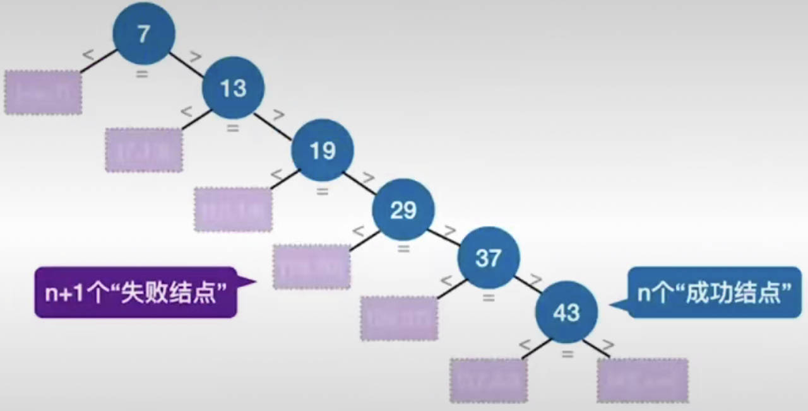
折半查找（二分查找）
适用范围：仅适用于有序的顺序表；
折半查找判定树构造：
- 若包含
low和high之间的元素个数为奇数，则以mid为根节点递归二分构造即可； - 若包含
low和high之间的元素个数为偶数，则mid分割后，左半边要比右半边少一个元素；- 只有可能是右子树结点比左子树多；
- 每次分层后的
low结点都是左子树，high结点都是右子树； - 此处以向下取整作为取
mid的方式，如果是向上取整，则左比右要多一个；
- 特点：右子树结点数 - 左子树结点数 = 0或1
- 折半查找判定树一定是平衡二叉树；
- 只有最下面一层是不满的，因此树高的计算方式与完全二叉树相同： \(h=\lceil \log_2(n+1)\rceil\) 或 \(h=\lfloor\log_2n\rfloor+1\)；
- 结点关键字（序号）满足：左<中<右，因此该树还是二叉排序树；
- 失败结点个数：\(n+1\)，也是树的空链域个数；
- 效率：不论查找成功还是失败，都有 \(ASL \le h\)，因此时间复杂度为 $O(_2n) $
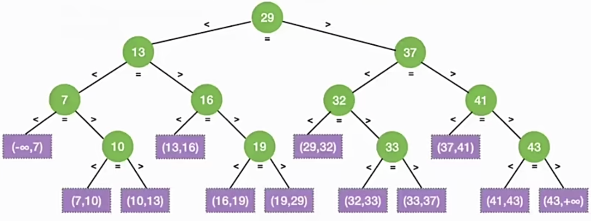
1 | int binarySearch(int data[], int n, key){ |
分块查找
分块查找，又称索引顺序查找，数据分块存储，块内无序、块间有序；
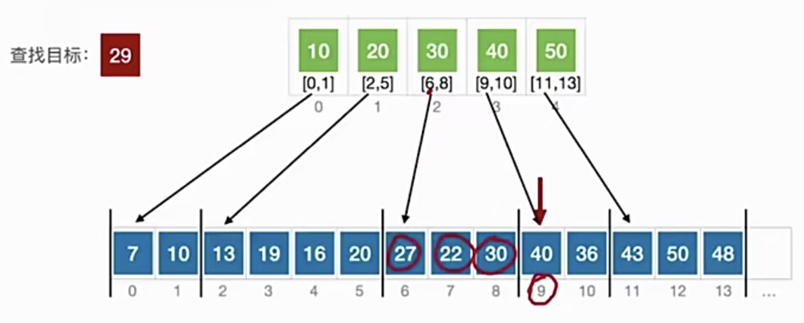
算法思想：
- 索引表中记录每个分块的最大关键字以及分块的区间；
- 先查索引表（顺序或折半查找都行），再对特定分块内的元素进行顺序查找（因为块内无序，所以只能顺序查找）；
效率分析：
- ASL = 查索引表的ASL + 查分块内元素的ASL；
- 假设有 \(n\) 个元素，均匀分为 \(b\) 块，每块内有 \(s\) 个元素，则
- 顺序查找索引表：\(ASL=\cfrac{b+1}{2}+\cfrac{s+1}2\)，通分后可求得当 \(s=\sqrt{n}\) 时，\(ASL_{min}=\sqrt{n}+1\)
- 折半查找索引表：\(ASL=\lceil\log_2(b+1)\rceil+\cfrac{s+1}{2}\)
注意点：对索引表进行折半查找时，若索引表中不包含目标关键字，则折半查找最终会停在
low > high 的位置，此时要在 low
指向的分块中找。
- 只有当
low超出了索引表的范围时才判定为查找失败；
B树
特性
B树，又称多路平衡查找树（balance），B树中所有结点的孩子个数的最大值（最大分叉数）称为B树的阶，通常用 \(m\) 表示。
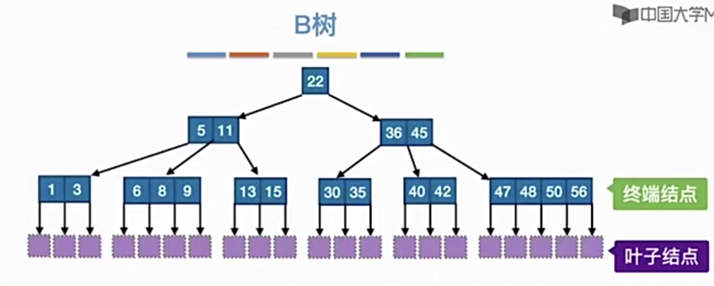
\(m\)阶B树的核心特性：（分叉数 = 子树个数）
- 根节点的分叉数 \(\in[2,m]\)，关键字数 \(\in[1,m-1]\)；
- 其他结点的分叉数 \(\in [\lceil m/2\rceil,m]\)，关键字数 \(\in [\lceil m/2-1\rceil,m-1]\)
- 对任一结点，其所有子树的高度相同；
- 关键字的值：\(P_0<K_1<P_1<K_2<P_2<\dots\) 其中\(P\)表示左子树关键字的最大值或右子树关键字的最小值，\(K\)表示当前结点中的关键字值的范围；
- B树的失败结点只能出现在最下面一层；
- 一棵含有 \(n\) 个关键字的 \(m\) 叉B树，其高度的范围是：\(\log_m(n+1)\le h \le \log_{\lceil m/2\rceil}\cfrac{n+1}{2}+1\)；
B树的插入与删除
核心要求：
- 对于\(m\)阶B树，除了根节点外，每个结点的关键字数量必须在 \(\in [\lceil m/2-1\rceil,m-1]\) 区间内；
- 关键字的值要保持：\(P_0<K_1<P_1<K_2<P_2<\dots\)
B树的插入：
- 通过查找确定插入位置，注意一定是在终端结点进行插入；
- 插入关键字不会使关键字数量溢出时，直接插入；
- 若插入后结点关键字超过上限，则需将中间值放到父结点中，并将当前结点一分为二；
- 该操作若导致父结点关键字个数溢出，则需要将父结点也进行分裂，直到不再溢出；
- 若一直分裂到根节点仍然溢出，则分裂根节点会使树的整体高度+1；
B树的删除
- 删除非终端结点关键字
- 用其直接前驱（左子树最右下）或直接后继（右子树最左下）结点顶替位置，转化为对终端结点关键字的删除操作；
- 删除终端结点关键字
- 删除操作不会使结点关键字数量低于下限时，直接删除；
- 若删除后结点关键字数低于下限
- 若兄弟结点关键字够借，通过与父结点交换关键字，达到平衡的目的；
- 若兄弟结点关键字不够借，则需要与兄弟结点，以及父结点内夹中的关键字合并；
- 若合并后导致父结点关键字数低于下限，需要让父结点再与其兄弟结点以及父父结点夹中关键字合并；
B+树
类似于分块查找思想构建的多级多阶树；
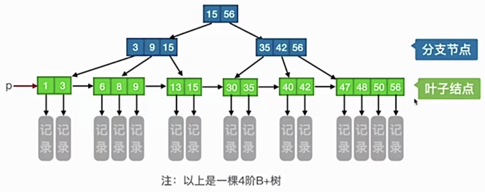
一棵\(m\)阶B+树的特性：
根节点的分叉数 \(\in [1,m]\)，关键字数 \(\in [1,m]\)；
其他结点的分叉数 \(\in [\lceil m/2 \rceil,m]\)，关键字数 \(\in [\lceil m/2 \rceil,m]\)；
结点的子树个数与关键字个数相等；
每个分支结点最多有\(m\)棵子树；
非叶根节点至少有两棵子树，其他每个分支结点至少有\(\lceil m/2 \rceil\)棵子树；
分支结点的每个关键字都是该结点的某一个孩子结点中所有记录的最大值，且只起到索引的作用；
与记录的地址相关的关键字只保存在所有叶子结点中，且从左到右有按关键字大小顺序排列，兄弟结点是单向链接的（支持顺序查找）；
B树 VS B+树
| m阶B树 | m阶B+树 | |
|---|---|---|
| 类比 | 二叉查找树-->m叉查找树 | 分块查找-->多级分块查找 |
| 关键字与分叉 | n个关键字对应n+1个分叉（子树） | n个关键字对应n个分叉 |
| 结点包含的信息 | 所有结点都包含记录的信息 | 只有叶子结点包含记录信息 |
| 查找方式 | 不支持顺序查找，可能在任意层结点中查找成功；查找速度不稳定 | 支持顺序查找，不论成败都停在叶子结点所在层；查找速度稳定 |
| 相同点 | 除了根节点外的每个结点最少都要有\(\lceil m/2 \rceil\)个分叉，任何结点的所有子树都一样高 |
散列查找
基本概念
散列（Hash），又称哈希；
散列表：一种数据结构，数据元素的关键字与其存储地址直接相关；
散列函数：描述关键字与其在散列表中的存储地址关系的函数
冲突：通过散列函数映射到的存储位置上已有元素存放；
同义词：通过散列函数映射到同一个存储位置的关键字；
装填因子：\(\alpha\) = 散列表中记录的个数 / 表长；
常见散列函数
除留余数法：\(H(key)=key \space \% \space p\)，其中\(p\)是不大于表长但最接近或等于表长的质数；
- 用质数取模，分布更均匀，冲突更少；
直接定址法：\(H(key)=key\) 或 \(H(key)=a\times key+b\)；
- 目的是让不同的关键字尽可能少冲突，适合关键字的分布基本连续的情况；
数字分析法：选取数码分布较为均匀的若干位作为散列地址（例如手机尾号后四位）；
平方取中法：取关键字的平方值的中间几位数字作为散列地址（例如以身份证号作为关键字存储学校学生信息）；
- 这种方法得到的散列地址与关键字的每位都有关系；
冲突的处理方式
拉链法（链地址法）：同义词用链表串起来；
- 计算拉链法的ASL时，若映射的位置上为空链表（即NULL），则该处不算一次对比；
- 查找成功的ASL等于各个冲突次数的结点数加权和均值；
- 查找失败的ASL等于装填因子；
- 优化方法：让链表中的元素以升序或降序方式排列，可提高在链表中执行顺序查找的效率；
开放定址法：\(H_i=(H(key)+d_i)\space \% \space m\)，其中\(d_i\)称为增量序列，有三种常见方法确定其取值
- 线性探测法：\(d_i=0,1,2,3,\dots,m-1\)；
- 由于该方法判断查找失败的依据是查找到空位置，因此删除某个元素时需要用一个变量表明是删除了不是空了；
- 该方法很容易造成同义词、非同义词的“聚集（堆积）现象”，降低查找效率；
- 平方探测法（二次探测法）：\(d_i=0^2,1^2,-1^2,2^2,-2^2,\dots,k^2,-k^2\)
其中\(k\le m/2\)；
- 比起线性探测法，可是关键字分布更分散一些；
- 注意：使用该方法时，散列表长度\(m\)必须是一个可以表示成\(4j+3\)的素数，这样才能探测到所有的位置；
- 伪随机序列法：\(d_i\) 为一个伪随机序列
再散列法：准备多个散列函数，一个发生冲突了就用下一个；
查找效率
查找效率取决于：①散列函数 ②处理冲突的方法 ③装填因子；
冲突会增加ASL，降低查找效率，对给定的关键字集合，应该尽可能地将它们均匀散列到表中的各个地址上，使冲突更少；
散列查找是典型的“用空间换时间”的算法，只要散列函数设计得合理，则当散列表越长时，冲突的概率就会越低；
Chapter8 排序
概念
排序：将个元素按关键字递增/递减的顺序重新排列；
分类：
- 内部排序：数据都存在内存中；
- 外部排序：数据太多，无法一次性全部放入内存中；
评价指标：
- 时间复杂度、空间复杂度；
- 稳定性：关键字相同的元素在排序后的相对顺序是否改变；
内部排序
插入排序
简单插入排序
算法思想：每次将一个待排序的记录按其关键字大小插入到前面已排好序的子序列中，知道全部记录插入完成；
直接插入排序：顺序查找到插入的位置，适用于顺序表、链表；
折半插入排序：折半查找到插入的位置，仅适用于顺序表；
- 当
low>high时停止折半查找，并将[low, i-1]区间内是所有元素右移一格；- 因为是先移动
data[j]~data[i-1]，再将data[i]放置到data[j]的位置，因此需要一个临时变量存储data[i]的值以免在放置前被覆盖；
- 因为是先移动
- 当
mid=key时，应该继续令low=mid+1，确保稳定性；最终应该将元素插入到low（或high+1）所指位置；
性能分析：
- 空间复杂度：\(O(1)\)；
- 时间复杂度：
- 最好：原本有序 \(O(n)\)
- 最坏：原本逆序 \(O(n^2)\)
- 平均：\(O(n^2)\)
- 稳定性：稳定
1 | // 直接插入排序 |
希尔排序
算法思想：先追求表中的元素部分有序，再逐步逼近全局有序；
方式：将待排序表分割成若干形如 \(L[i,i+d,i+2d,\dots,i+kd]\) 的特殊子表，对各个字表分别进行直接插入排序，缩小增量 \(d\)（通常取半），重复上述过程，直到 \(d=1\) 为止；
- 第一次的增量 \(d\) 通常可以选取元素个数的一半；
- 仅适用于顺序表；
性能分析：
- 空间复杂度：\(O(1)\)；
- 时间复杂度：最好情况与增量序列的选择有关，最坏情况是令\(d=1\)，等于直接插入排序 \(O(n^2)\)
- 当 \(n\) 当某个范围内时，可达到 \(O(n^{1.3})\)；
- 稳定性：不稳定
1 | void shellSort(int data[], int n){ |
交换排序
根据序列中两个元素关键字的比较结果来调换这两个记录的位置；
常用的交换排序算法有：冒泡排序和快速排序；
冒泡排序
可以正向每次冒最大的数，也可以逆向每次冒最小的数；
适用于顺序表和链表；
空间复杂度：\(O(1)\)；
时间复杂度：
- 最好情况：原本有序，大循环只需一趟，总共对比\(n-1\)次关键字，因此复杂度为 \(O(n)\)；
- 最坏情况：原本逆序，大循环需要 \(n-1\)
趟，总对比次数=总交换次数=\(\sum_{i=1}^{n-1}=\cfrac{n(n-1)}{2}\)
次，因此复杂度为 \(O(n^2)\)；
- 每交换元素一次，需要移动元素三次；
- 平均：（最好+最坏）/2 = $O(n^2) $；
稳定性：因为只在data[i-1] > data[i]时交换，所以稳定；
1 | void swap(int* a, int* b){ |
快速排序
快排是所有内部排序算法中，平均性能最好的；
与冒泡排序的区别：冒泡每次将最大值（最小值）固定到表尾（表头），而快排每次确定一个中间元素的位置；
算法思想：
- 每次找一个元素作为基准（或称为枢轴，通常取首元素），通过一次划分将待排序表以基准为分界线分为左右两部分（左小右大），由此确定了基准的位置；
- 一次划分：对当前排序表用枢轴元素进行分割，也是确定枢轴元素位置的过程；
- 一趟排序：对存在的所有字表都进行一次划分的总操作；
- 递归地对两个字表重复上述过程，直到每部分只有一个元素或为空为止；
性能评价：
- 时间复杂度：\(O(n*d)\)，其中 \(d\) 为递归层数。将\(n\)个元素不断分割的过程表示成二叉树，树的高度就是递归层数；
- 由于 \(n\) 个结点的二叉树的最小高度为 \(\lfloor\log_2n\rfloor+1\)，最大高度为 \(n\)，因此递归层数 \(\in [\lfloor\log_2n\rfloor+1,n]\)；
- 综上，最好情况 \(O(n\log_2n)\)，最坏情况 \(O(n^2)\)，平均 \(O(n\log_2n)\)；
- 最好情况：每次选中的枢轴都能均匀地划分排序序列，使递归层数小；
- 最坏情况：每次都不均匀划分，递归层数最大，例如原本就有序的序列，每次取首元素作为枢轴，效率最低；
- 空间复杂度：\(O(d) \in [O(\log_2n,O(n)]\)；
优化方案：
- 以头、中、尾三个位置的元素的中间值作为枢轴元素；
- 随机选取一个元素作为枢轴元素；
稳定性：不稳定；
1 | int partition(int data[], int low, int high){ |
选择排序
主要思想：每一趟在待排序元素中选取关键字最小（或最大）的元素加入有序子序列；
简单选择排序
每次从头到位扫描，找到最小的元素，放到头部位置并缩小规模；
适用顺序表和链表；
性能评价：
- 空间复杂度：$O(n) $；
- 时间复杂度：无论什么情况都需要 \(n-1\) 趟处理，总共对比次数 \(\sum_{i=1}^{n-1}=\cfrac{n(n-1)}{2}\)，交换元素次数 \(<n-1\)，因此复杂度 \(O(n^2)\)；
稳定性：不稳定；
1 | void selectSort(int data[], int n){ |
堆排序
堆（Heap）：若\(n\)个关键字组成的序列 \(L[1,2,\dots,n]\) 满足下面某一条性质，则称为堆：
- 若满足：\(L(i) \ge L(2i)\) 且 \(L(i) \ge L(2i+1)\)，则称为大根堆（大项堆），其中 \(1\le i\le n/2\)；
- 若满足：\(L(i) \le L(2i)\) 且 \(L(i) \le L(2i+1)\)，则称为小根堆（小项堆），其中 \(1\le i\le n/2\)；
从树的视角看：
- 大根堆：完全二叉树中，任何一个结点都有：根 \(\ge\) 左右孩子；
- 小根堆：完全二叉树中，任何一个结点都有：根 \(\le\) 左右孩子；
算法思想：基于大根堆实现的是递增排序，小根堆是递减排序；
- 建立大根堆
- 选择根节点关键字加入有序子序列s，并将除去根节点之后的剩余部分再调整为大根堆；
- 重复上一步，直到所有关键字都加入有序子序列中为止；
稳定性：不稳定；
step1 建立大根堆
将初始序列看作树的顺序存储结构，注意该存储方式的0号位置存储结点个数，关键字从1号位置开始存储；
自底向上遍历所有分支结点，检查当前结点是否满足 根\(\ge\)左右 的要求，若不满足，则将当前结点与两个孩子中更大的一个互换；
如果元素互换破坏了下一层的大根堆，则用相同的方式让小元素不断下坠；
1 | // 建立大根堆 |
step2 堆排序
每一趟将堆顶元素加入有序子序列，并将待排序元素序列再次调整为大根堆（小元素不断下坠）；
1 | void heapSort(int data[], int n){ |
算法效率分析：
- 空间复杂度：\(O(1)\)；
- 时间复杂度：\(O(n) +O(n\log_2n) = O(n\log_2n)\)；
建立大根堆的时间复杂度分析：
一个结点，每下坠一层，最多只需要对比关键字2次，第一次是左右孩子的对比，第二次是左右孩子中较大者与根的对比；
若树高为 \(h\)，某结点在第 \(i\) 层，则这个结点最多可能下坠 \(h-i\) 层，因此关键字对比次数最多为 \(2(h-i)\)；
\(n\) 个结点的完全二叉树高度为 \(h=\lfloor\log_2n\rfloor+1\)，第 $ i$ 层最多有 \(2^{i-1}\) 个结点，只有第 \(1\) 到第 \(h-1\) 层的结点才可能下坠；
因此，所有结点的对比次数之和不会超过： \[ 2^0\cdot 2(h-1)+2^1\cdot2(h-2)+\dots+2^{h-1}\cdot2(h-(h-1))\\=\sum_{i=1}^{h-1}[2^{i-1}\cdot2(h-i)] \\= \sum_{i=1}^{h-1}2^i(h-i) \] 令 \(j=h-i\) 换元，并代入 \(h=\lfloor\log_2n\rfloor+1\)，化简并使用错位相减法可求得： \[ \sum_{i=1}^{h-1}2^i(h-i) =\sum_{j=1}^{h-1}2^{h-j}j = \sum_{j=1}^{h-1}2^{\lfloor\log_2n\rfloor}\cdot 2 \cdot 2^{-j}\cdot j \\ \le 2n\sum_{j=1}^{h-1} 2^{-j}\cdot j \le 4n \] 由此可知建立大根堆的时间复杂度为 \(O(n)\)；
排序过程的时间复杂度：
\(n\) 个结点，总共需要 \(n-1\) 趟排序，每趟排序都需要
- 交换首尾元素 \(O(1)\)；
- 调整大根堆：\(O(\log_2n)\)
- 消耗主要关键字对比次数上，每下坠一层最多对比两次；
- 任意结点的下坠次数都不会超过根节点，因此每个结点的比较次数不会超过 \(2(h-1)\)；
- 代入高度表达式可得该部分的复杂度为 \(O(\log_2n)\)；
因此排序部分的复杂度为 $ O(n_2n)$
堆的插入与删除操作
插入：大根堆就让新元素不断下沉，小根堆让新元素不断上升；
- 下沉：与左右孩子中的较大者互换，最多对比两次；
- 上升：比双亲结点小就与双亲结点互换，只对比一次；
删除：用堆底的元素顶替被删除元素的位置，并以该位置为根节点调整大小根堆；
二路归并排序
归并（Merge），又称合并，意在把两个或多个已经有序的序列合并成一个；
\(m\) 路归并：每选出一个小元素需要对比 \(m-1\) 次关键字；
内部排序中的归并一般是2路归并；
算法思想：将初始序列的每一项都看成一个有序的子序列，每一轮都归并相邻的两个元素（不重叠），之后基于前一轮的归并结果继续归并，直到只有一个序列为止；
程序思想：递归+分治
- 用
low和high指向原始序列的头和尾，并用mid分割成两个序列，第一个序列为[low, mid]，第二个为[mid+1, high]； - 对左半部分
[low, mid]递归地进行归并排序； - 对右半部分
[mid+1, high]递归地进行归并排序； - 将左右两个子序列
Merge为一个；
1 | int* b = (int*) malloc (sizeof(int) * n); // 辅助数组 |
算法效率分析：
- 空间复杂度：\(O(n)\)，来源于辅助数组
b的大小（取决于原序列的元素个数）； - 时间复杂度：$O(n)+O(_2n) = O(_2n) $；
2路归并的归并树在形态上就是一棵倒立的二叉树，原始序列分布在树的最底层（视觉上是最顶层）；
二叉树第 \(i\) 层最多有 \(2^{i-1}\) 个结点，若树高为 \(h\)，则第 \(h\) 层的结点数（即序列元素个数）满足：\(n = 2^{h-1}\)；
由上一点可知，\(h-1 = \log_2n\)，而归并的趟数 = 归并树的高度 - 1，因此归并趟数为 \(\lceil\log_2n\rceil\)；
每一趟归并的总对比次数都不会超过 \(n-1\)，即每一趟归并的时间复杂度为 \(O(n)\)；
基数排序
基数排序（Radix Sort）不是基于比较的排序算法；
适用情况：通常用于链表的排序；
擅长解决的问题：
- 数据元素的关键字可以方便地拆分为 \(d\) 组，且 \(d\) 较小；
- 每组关键字的取值范围不大，即 \(r\) 较小；
- 数据元素个数较多，即 \(n\) 较大；
算法思想：
- 将每个关键字拆分为 \(d\) 组（位），建立 \(r\) 个队列；
- 按照各个关键字位权重递增的次序，做 \(d\) 趟分配和收集；
- 分配：顺序扫描各个元素，按当前选择的“位”做队列分配 $O(d) $；
- 收集：将各个队列的结点依次出队并链接 \(O(r)\) ；
- 收集时不需要每个队列都做循环出队，只需要将外部链表的
next指针指向当前队列的front即可完成整个队列的收集；
- 收集时不需要每个队列都做循环出队，只需要将外部链表的
稳定性：稳定；
算法效率分析：
- 空间复杂度：\(O(r)\)，\(r\)是基数，代表了元素每一位可能的取值的个数；
- 时间复杂度：\(O(d\cdot(n+r))\)
- 一趟分配 \(n\) 个元素 \(O(n)\)，一趟收集 \(r\) 组数据 \(O(r)\)；
- 总共需要 \(d\) 趟，\(d\) 表示序列中元素的最大位数（例如
{129,7,46}中 \(d=3\)）；
外部排序
基本原理和方式
内外存数据交换原理：
- 操作系统以“块“为单位对磁盘存储空间进行管理；
- 修改外存的数据需要经历 ①将外存数据读入内存输入缓冲区 ②在内存中修改数据 ③通过内存的输出缓冲区写回外存；
需要外部排序的原因：外存数据无法一次全部读入内存；
外部排序策略：归并排序，最少只需在内存中分配3块与磁盘块等大的缓冲区，即可实现任意一个外部大文件的排序；
- 根据缓冲区个数读入多块数据，内部排序，再按块写回外存，即生成初始归并段；
- 对所有归并段进行递归多趟归并；
重要结论：采用多路归并可以减少归并趟数，从而减少磁盘I/O（读写）次数；
对 \(r\) 个初始归并段，做 \(k\) 路归并，则归并树可以用 \(k\) 叉树表示，若树高为 \(h\)，则归并趟数为 \(h-1=\lceil\log_kr\rceil\)；
由上一点可知，\(k\) 越大，\(r\) 越小，归并趟数越少；
- 优化方案一：增加归并路数 \(k\)，进行多路平衡归并，注意
\(k\) 路平衡归并的条件有：
- 最多只能有 \(k\) 个段合并为一个；
- 每一趟归并中，若有 \(m\) 个归并段参与归并，则经过这一趟处理会得到 \(\lceil m/k\rceil\) 个新的归并段；
- 优化方案二：增加初始归并段长度，减少初始归并段数量
\(r\)；
- 若外存待排序数据有 \(N\) 个记录（多个记录组成一个块），内存支持存储的记录个数为 \(L\)，则初始归并段数量为 \(r=\dfrac{N}{L}\)；
- 优化方案一：增加归并路数 \(k\)，进行多路平衡归并，注意
\(k\) 路平衡归并的条件有：
多路归并的负面影响：对于 \(k\) 路归并，
- 需要开辟 \(k\) 个输入缓冲区，内存开销增大；
- 每挑出一个关键字都需要对比 \(k-1\) 次；
败者树
用途：优化多路归并带来的关键字对比次数增大，导致降低效率的缺陷；
败者树可视为一棵完全二叉树（多了一个头）
- \(k\) 个叶子结点分别对应 \(k\) 个归并段中当前参加比较的元素（归并段靠前的元素）
- 分支结点用来记录左右子树中“失败者”来自的孩子编号（归并段编号）
- 分支结点记录的是失败者编号，但胜利者要继续往上比较，一直到根节点为止，选出最终的优胜者；
利用败者树，在多路平衡归并算法中，每挑出一个关键字只需要对比 \(\lceil \log_2k \rceil\) 次关键字；
- 高度为 \(h\) 的完全二叉树在第 \(h\) 层最多有 \(2^{h-1}\) 个结点，因此 \(k\) 路元素个数 \(k = 2^{h-1}\)，解得 \(h-1 = \log_2k\)；
- 又因为 \(h-1\) 表示了关键字对比的最大次数，因此每选出一个最小/最大元素，最多只需要对比 \(\log_2k\) 次；
注意：败者树优化的部分在于从“每次都对比\(k-1\)次”到“只有构建败者树的时候需要对比\(k-1\)次”，此后每次选最大/最小值最多都只要 \(\log_2k\) 次对比；
置换-选择排序
用途：优化增大初始归并段长度，减少初始归并段数量的方式；
原来的方式是 \(r=\dfrac{N}{L}\)，受限于用于内部排序的内存工作区容量 \(L\)；
置换-选择排序可构建出长度不规则的多个归并段，并且这些归并段大小不受内存工作区容量限制；
算法思想：设初始待排序文件为 \(FI\)，初始归并段输出文件（输出缓冲区）为 \(FO\)，内存工作区为 \(WA\)；假设 \(WA\) 最多可容纳 \(w\) 个记录
- （1）从 \(FI\) 读入 \(w\) 个记录到 \(WA\) 中；
- （2）从 \(WA\)
中选出其中关键字最小的记录，记为
MINIMAX记录； - （3）将
MINIMAX记录输出到 \(FO\)，当缓冲区 \(FO\) 满载时会自动输出到外存中； - （4）若 \(FI\) 非空，则从 \(FI\) 读入下一个记录到 \(WA\) 中；
- （5）从 \(WA\) 中选出关键字比
MINIMAX的关键字更大的最小关键字，以其记录作为新的MINIMAX记录； - 重复（3）～（5），直到 \(WA\)
中选不出新的
MINIMAX为止，由此得到一个初始归并段，此时输出一个归并段的结束标志到 \(FO\) 中； - 重复（2）～（6），直到 \(WA\) 为空，由此得到所有初始归并段；
最佳归并树
理论基础
每个归并片段对应一个叶子结点，且归并段包含的数据块的数量作为叶结点的权值；
归并树的带权路径长度 WPL = 所有叶结点的带权路径长度之和；
归并过程中的磁盘 I/O 次数 = 归并树的WPL * 2（WPL=读次数=写次数）；
注意：\(k\) 叉归并的最佳归并树一定是严格的 \(k\) 叉树，即树中只有度为 \(k\) 和度为 \(0\) 的结点；
构造最佳归并树：
- 最佳归并树就是WPL最小的归并树，即用 \(k\) 个归并段作为叶子结点构建 \(k\) 叉哈夫曼树；
- 每次选择 \(k\) 个权值最小的结点合并（视虚段为权值等于0的叶结点），并将它们的权值之和作为合并结点的权值；
- 是否需要补充虚段：
- 若（初始归并段数量 - 1） % (k-1) = 0，说明刚好可以构成严格 \(k\) 叉树，不需要添加虚段；
- 若（初始归并段数量 - 1） % (k-1) = u \(\ne\space 0\)，则需要补充 \((k-1)-u\) 个虚段；